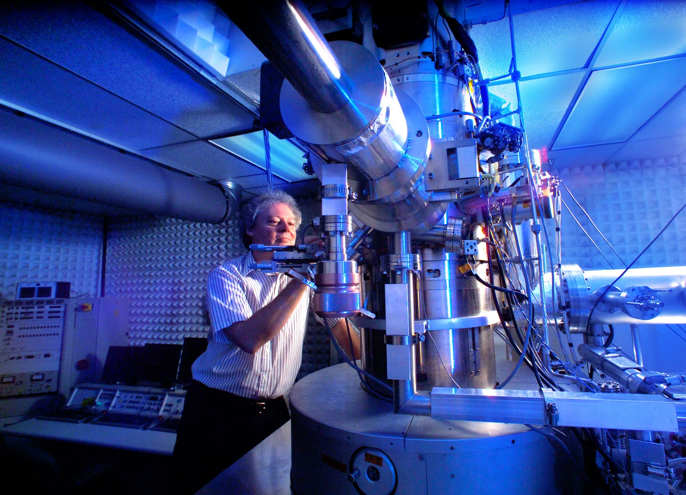

Valo ja elektroni aaltoina ja hiukkasina
Miksi hyvin heikko valo tai elektronisuihku piirtää varjostimelle ensin satunnaisia yksittäisiä pisteitä, ja raitakuvio syntyy vasta, kun osumia on tuhansia?
Pohjatiedot
- Kaksi aaltoa vahvistaa tai heikentää toisiaan sen mukaan, kuinka suuri niiden matkaero onluku Aaltojen yhteisvaikutus: superpositio ja interferenssi
- Fotonin energia on $E = hf = \tfrac{hc}{\lambda}$. Yksi fotoni voi irrottaa metallista enintään yhden elektroninluku Valosähköinen ilmiö ja fotoni
- Kun atomi siirtyy alemmalle energiatasolle, se lähettää fotonin. Fotonin energia on tasojen energioiden erotusluku Vetyatomin energiatasot ja Bohrin malli
Ydinpolku: tee vaiheet järjestyksessä. Ydinpolulla ei vain lasketa. Siinä myös tutkitaan, selitetään ja piirretään kuvaajia. Valinnainen-tehtävät ovat lisäharjoittelua. Valinnaisia tehtäviä on 2.
Luvun tärkeät käsitteet Vapaaehtoinen
Tutustu luvun tärkeisiin käsitteisiin. Voit kirjoittaa niiden merkitykset sinulle vahvimmalla kielellä tai useammalla kielellä.
- Kaksoisrakokoe
- Koe, jossa valo tai elektronit kulkevat kahden kapean raon läpi. Varjostimelle syntyy kirkkaita ja tummia raitoja.
- Comptonin ilmiö
- Röntgensäteily siroaa aineesta, ja sironneen säteilyn aallonpituus on pidempi kuin tulevan säteilyn.
- Aalto-hiukkasdualismi
- Samalla kohteella, esimerkiksi fotonilla tai elektronilla, on sekä aalto- että hiukkasominaisuuksia.
Pohdinta
Vuonna 1989 japanilainen tutkimusryhmä lähetti elektroneja yksi kerrallaan kohti laitetta, joka toimii kuin kaksoisrako. He kuvasivat varjostimen videolle. Ensimmäiset elektronit näkyivät yksittäisinä valopisteinä. Pisteet syttyivät näennäisesti satunnaisiin kohtiin. Kun pisteitä oli kertynyt kymmeniä tuhansia, varjostimella näkyi säännöllisiä raitoja. Saman kokeen voi tehdä niin heikolla valolla, että laitteessa on yleensä vain yksi fotoni kerrallaan.
Kulkeeko jokainen elektroni tai fotoni vain toisen raon kautta? Jos kulkee, mistä raidat tulevat?
Kertaa: valosähköinen ilmiö
Ennusta
Tee ennusteet ennen tutkimista 2 kysymystä
Ennuste 1: toinen rako auki
Ennuste 2: kulkureitin mittaus
Tutki
Simulaatio
Käyttöohje
Käynnistä lähettää kvantteja yksi kerrallaan. Haalea aalto leviää lähteestä rakojen läpi, ja kvantti havaitaan varjostimella yhtenä pisteenä. +1000 osumaa lisää tuhat osumaa kerralla. Tyhjennä tyhjentää varjostimen. Valitse Hiukkaset, Raot (vain vasen, molemmat tai vain oikea) ja Kulkureitin mittaus. Kun mittaus on päällä, rakojen vieressä olevista lampuista syttyy se, jonka kautta kvantti kulki. Ylhäällä on laite ylhäältä katsottuna. Keskellä on varjostin edestä katsottuna. Alhaalla on osumien pylväskuvaaja $0{,}5\,\text{mm}$:n väleissä. Liukusäädin siirtää vihreää laskentaväliä $x_0 \pm 0{,}2\,\text{mm}$. Kun vaihdat hiukkasia, rakoja tai mittausta, varjostin tyhjenee. Nopeus muuttaa vain animaation tahtia.
Mallin oletukset
Osumapaikat arvotaan mallin todennäköisyysjakaumasta. Luvut ovat siis mallin arvoja eivätkä mittauksia. Arvonta alkaa jokaisen tyhjennyksen jälkeen samasta kohdasta, joten sama koe antaa aina samat luvut. Fotonien ja elektronien kuviot on piirretty samaan mittakaavaan, jotta niitä on helppo vertailla. Todellisissa kokeissa raitaväli on aivan erilainen. Rakojen leveys ja etäisyys on piirretty suurennettuina. Kulkureitin mittaus on ihanteellinen: se kertoo aina oikean raon. Laitteessa on kerrallaan vain yksi kvantti, eikä kvantteja katoa matkalla. Haalea aalto näyttää todennäköisyysaallon. Se ei ole mitattava suure.
Laskennan selitys
Kun molemmat raot ovat auki eikä reittiä mitata, osumien todennäköisyys kohdassa $x$ on verrannollinen aaltomallin intensiteettiin
$$I(x) \propto \cos^2\!\left(\frac{\pi x}{s}\right) \cdot \left(\frac{\sin(\pi x / a)}{\pi x / a}\right)^2$$
Tässä raitojen väli on $s = 2{,}0\,\text{mm}$ ja yhden raon kuvion ensimmäinen nollakohta on $a = 10\,\text{mm}$. Yhdellä raolla tai mitatulla reitillä ensimmäinen tekijä puuttuu, joten raitoja ei ole. Tumma raita on siellä, missä $\cos^2$-tekijä on nolla: $x = \pm 1{,}0\,\text{mm}, \pm 3{,}0\,\text{mm}, \ldots$. Osuus on $n : N$. Tässä $n$ on laskentavälin osumien määrä ja $N$ on kaikkien osumien määrä. Katkoviiva on odotettu osumamäärä eli $N$ kertaa välin todennäköisyys.
Lähetä fotoneja tai elektroneja yksi kerrallaan kahden raon läpi. Katso, miten yksittäisistä osumista syntyy kuvio.
Koe 1: yksi rako vai kaksi
Testaa ennuste 1. Fotonit, kulkureitin mittaus pois ja laskentaväli $x_0 = 1{,}0\,\text{mm}$ pysyvät samoina. Vaihda vain rakoja. Seuraa ensin muutamaa yksittäistä fotonia Käynnistä-painikkeella. Paina sitten +1000 osumaa ja kirjaa mittaus. Avaa molemmat raot, paina taas +1000 osumaa ja kirjaa.
Alkutila: hiukkaset: fotonit, raot: vain vasen, kulkureitin mittaus: ei mitata, laskentaväli = $1\,\text{mm}$. Vakiona: hiukkaset, kulkureitin mittaus, laskentaväli. Muutetaan: raot.
| raot | $N$ | $n$ | $n$ : $N$ $(\%)$ |
|---|
Lisää tutkittavaa 3 tehtävää
Koe 2: kumman raon kautta?
Testaa ennuste 2. Nyt lähetetään elektroneja, ja molemmat raot ovat auki. Laskentaväli on tummassa raidassa $x_0 = 1{,}0\,\text{mm}$. Paina +1000 osumaa ilman kulkureitin mittausta ja kirjaa. Kytke sitten mittaus päälle, paina +1000 osumaa ja kirjaa. Vertaa varjostimen kuvioita.
Alkutila: hiukkaset: elektronit, raot: molemmat, kulkureitin mittaus: ei mitata, laskentaväli = $1\,\text{mm}$. Vakiona: hiukkaset, raot, laskentaväli. Muutetaan: kulkureitin mittaus.
| kulkureitin mittaus | $N$ | $n$ | $n$ : $N$ $(\%)$ |
|---|
Johtopäätös: kuula vai aalto?
Kirjoita taulukoidesi perusteella: Miten laskentavälin osuus muuttui, kun toinen rako avattiin? Miten se muuttui, kun kulkureitti mitattiin? Miksi tulosta ei voi selittää niin, että jokainen kvantti kulkee kuulan tavoin yhden raon kautta? Mikä yhteys on aallolla ja yksittäisellä osumalla?
Mallivastaus
Yhden raon kanssa laskentaväliin $x_0 = 1{,}0\,\text{mm}$ osui $43$ fotonia $1000$:sta. Kun molemmat raot olivat auki, osui vain $3$. Jos fotonit kulkisivat kuulina jommankumman raon kautta, jakauma olisi kahden yhden raon kuvion summa. Osuus pysyisi silloin samana kuin yhden raon kanssa. Kumpikin rako vaikuttaa jokaiseen kvanttiin: sen aalto kulkee molempien rakojen kautta, ja tässä kohdassa aallot heikentävät toisiaan. Elektronit käyttäytyivät samoin. Kun reitti mitattiin, tumma raita katosi ($43$ osumaa), koska tieto reitistä poistaa interferenssin. Yksittäinen osuma on satunnainen piste. Aallon intensiteetti kertoo, millä todennäköisyydellä osuma tulee kuhunkin kohtaan. Luvut ovat mallin arvoja.
Arvioi oma vastauksesi
Merkitse kohdat, jotka sinun vastauksessasi jo on.
Kertaa asia teoriasta ja harjoittele tehtävillä.
Comptonin sirontakoe
Mallin laskemia arvoja
Arthur Compton suuntasi vuonna 1923 röntgensäteilyä grafiittiin. Hän mittasi, mikä on eri suuntiin siroavan säteilyn aallonpituus $\lambda'$. Tulevan säteilyn aallonpituus oli $\lambda = 0{,}0711\,\text{nm}$. Taulukon arvot on laskettu Comptonin mallista, ja Comptonin mittaukset noudattivat niitä.
| Sirontakulma | $\lambda'$ ($\text{nm}$) |
|---|---|
| $0^\circ$ | $0{,}0711$ |
| $45^\circ$ | $0{,}0718$ |
| $90^\circ$ | $0{,}0735$ |
| $135^\circ$ | $0{,}0752$ |
| $180^\circ$ | $0{,}0760$ |
Teoria
Ydinajatus
Aalto vai hiukkanen?
Kaksoisrakokokeessa valo kulkee kahden kapean raon läpi varjostimelle. Raot ovat lähellä toisiaan. Varjostimelle syntyy kirkkaita ja tummia raitoja. Aaltomalli selittää raidat näin: kahdesta raosta lähtevät aallot vahvistavat toisiaan siellä, missä matkaero on aallonpituuden monikerta. Matkaero tarkoittaa sitä, kuinka paljon pidemmän matkan toinen aalto kulkee. Aallot heikentävät toisiaan siellä, missä matkaero on puolikas aallonpituus tai muu puolikkaan aallonpituuden pariton monikerta (luku Aaltojen yhteisvaikutus: superpositio ja interferenssi).
Valosähköisessä ilmiössä valo taas luovuttaa energiansa pieninä erinä eli kvantteina. Yksi fotoni, jonka energia on $hf$, voi irrottaa enintään yhden elektronin (luku Valosähköinen ilmiö ja fotoni). Fotoni on tietyn taajuuden valon energian pienin erä. Molemmat havainnot pitävät paikkansa. Miten sama valo voi olla molempia?
Yksi kvantti kerrallaan
Tehdään kaksoisrakokoe niin heikolla valolla, että laitteessa on keskimäärin alle yksi fotoni kerrallaan. Herkkä ilmaisin merkitsee jokaisen fotonin yhdeksi pisteeksi. Yksittäisen pisteen paikkaa ei voi ennustaa. Kun pisteitä kertyy tuhansia, ne muodostavat saman raitakuvion kuin voimakas valo. Sama tapahtuu elektroneilla. Elektronisuihkulla tehdyssä kaksoisrakokokeessa jokainen elektroni osuu varjostimeen yhteen kohtaan, mutta osumat kasautuvat raidoiksi. Elektronia pidetään yleensä pienenä hiukkasena, mutta kulkiessaan se käyttäytyy aallon tavoin. Fotonia taas kuvaa hyvin aaltomalli, mutta se havaitaan hiukkasen tavoin.
Aalto kertoo todennäköisyyden
Aaltomalli ei kerro, mihin yksittäinen fotoni tai elektroni osuu. Se kertoo todennäköisyyden, jolla kvantti havaitaan kussakin kohdassa. Missä aallon intensiteetti on suuri, osumia tulee paljon. Tummissa raidoissa osumia ei juuri tule. Kun vain toinen rako on auki, raidat katoavat. Kun molemmat raot ovat auki, tummiin raitoihin tulee vähemmän osumia kuin yhden raon kanssa. Toisen raon avaaminen siis vähentää osumia näissä kohdissa. Sitä ei voi selittää niin, että jokainen kvantti kulkisi pienen kuulan tavoin vain toisen raon kautta. Jos kokeessa mitataan, kumman raon kautta kukin kvantti kulkee, raitakuvio häviää. Silloin jakauma on kahden yhden raon kuvion summa.
Ilmiötä, jossa samalla kohteella on sekä aalto- että hiukkasominaisuuksia, kutsutaan aalto-hiukkasdualismiksi. Se ei tarkoita, että fotoni tai elektroni vaihtaisi muotoaan. Kumpikaan vanha malli, aalto tai kuula, ei yksin kuvaa kvanttioliota. Kvanttiolio on pieni kohde, jota kvanttifysiikka kuvaa, esimerkiksi fotoni tai elektroni. Koejärjestely ratkaisee, kumpi ominaisuus näkyy. Kulkiessaan kvanttiolio käyttäytyy aallon tavoin. Kun se havaitaan, se rekisteröidään yhteen kohtaan kuin hiukkanen.

Fotonin neljä mallia
Fotonia kuvataan fysiikassa usealla mallilla. Jokainen malli toimii omassa ilmiöjoukossaan. Mikään niistä ei yksin kerro koko kuvaa.
- Kentän tila: valo on sähkö- ja magneettikentän värähtelyä, joka etenee aaltona. Malli selittää interferenssin ja diffraktion. Diffraktio tarkoittaa sitä, että aalto taipuu raon tai esteen reunalla.
- Kentän kvantti: säteilykentän energia muuttuu vain kokonaisina kvantteina $hf$. Malli selittää valosähköisen ilmiön ja spektriviivat.
- Kvanttihiukkanen: fotoni havaitaan yhdessä kohdassa, ja se kantaa energiaa ja liikemäärää. Malli selittää yksittäiset osumat ja Comptonin ilmiön.
- Vuorovaikutuksen välittäjä: sähkövarausten välinen sähkömagneettinen vuorovaikutus välittyy fotonien avulla. Malli kuuluu hiukkasfysiikan standardimalliin.
Fotonilla ei ole lepomassaa. Lepomassa on massa, joka kappaleella on, kun se on levossa. Tyhjiössä fotoni etenee aina valon nopeudella $c$. Fotoni ei siis ole pieni kuula, joka voisi olla levossa.
Fotonin liikemäärä
Fotonilla ei ole massaa, mutta sillä on liikemäärä. Liikemäärä riippuu fotonin energiasta:
$$p = \frac{E}{c} = \frac{h}{\lambda}$$
Kaavassa $p$ on fotonin liikemäärä ($\text{kg}\cdot\text{m/s}$), $E = hf = \tfrac{hc}{\lambda}$ on fotonin energia ($\text{J}$), $c = 2{,}998 \cdot 10^8\,\text{m/s}$ on valon nopeus, $h = 6{,}626 \cdot 10^{-34}\,\text{J}\,\text{s}$ on Planckin vakio ja $\lambda$ on aallonpituus ($\text{m}$). Yksikkö täsmää: $\tfrac{\text{J}\,\text{s}}{\text{m}} = \tfrac{\text{kg}\cdot\text{m}^2/\text{s}^2 \cdot \text{s}}{\text{m}} = \text{kg}\cdot\text{m/s}$. Näkyvän valon fotonin liikemäärä on pieni. Aallonpituudella $500\,\text{nm}$ se on ${1{,}3 \cdot 10^{-27}\,\text{kg}\cdot\text{m/s}}$. Röntgenfotonin aallonpituus on $0{,}0711\,\text{nm}$. Sen liikemäärä on noin $7000$-kertainen, ${9{,}3 \cdot 10^{-24}\,\text{kg}\cdot\text{m/s}}$. Lyhyt aallonpituus tarkoittaa siis suurta energiaa ja suurta liikemäärää.
Comptonin ilmiö
Arthur Compton suuntasi vuonna 1923 röntgensäteilyä grafiittiin. Hän mittasi sironneen säteilyn aallonpituuden. Sironnut säteily on säteilyä, joka on muuttanut suuntaansa osuessaan aineeseen. Sironneen säteilyn aallonpituus oli pidempi kuin tulevan säteilyn. Ero kasvoi, kun sirontakulma kasvoi. Tätä kutsutaan Comptonin ilmiöksi. Aaltomalli ei selitä sitä. Aallon tahdissa värähtelevät elektronit säteilisivät samalla taajuudella kuin tuleva säteily. Fotonimallissa ilmiö on törmäys. Fotoni luovuttaa osan energiastaan ja liikemäärästään lähes vapaalle elektronille, ja elektroni lähtee liikkeelle. Energia säilyy:
$$hf = hf' + E_\text{k}$$
Kaavassa $hf$ on tulevan fotonin energia, $hf'$ on sironneen fotonin energia ja $E_\text{k}$ on elektronin saama liike-energia. Koska $hf' < hf$, sironneen fotonin taajuus on pienempi ja aallonpituus $\lambda'$ on pidempi kuin tulevan fotonin. Myös liikemäärä säilyy vektorisuureena: $\overline{p} = \overline{p}' + \overline{p}_e$. Tässä $\overline{p}_e$ on elektronin liikemäärä.
Fotonivirta
Valon teho $P$ kertoo, kuinka paljon energiaa valo kuljettaa sekunnissa. Jokainen fotoni tuo energian $hf$. Siksi sekunnissa kulkevien fotonien lukumäärä on
$$\frac{N}{t} = \frac{P}{hf}$$
Kaavassa $N$ on fotonien lukumäärä, $t$ on aika ($\text{s}$), $P$ on teho ($\text{W}$) ja $hf$ on yhden fotonin energia ($\text{J}$). Tavallisessa valossa fotoneja on niin paljon, että valo näyttää jatkuvalta virralta. Vasta hyvin heikossa valossa yksittäiset fotonit erottuvat.
Yleinen virhekäsitys
Moni ajattelee, että kaksoisrakokokeen raitakuvio syntyy, kun fotonit tai elektronit törmäilevät toisiinsa. Moni ajattelee myös, että jokainen kvantti kulkee pienen kuulan tavoin vain jommankumman raon kautta. Esimerkin heikossa valossa fotonit tulevat yksi kerrallaan, ja kuvio syntyy silti. Lasketaan yhtä monta osumaa yhteensä. Kuulamallissa osumien osuus $n : N$ tietyssä kohdassa pysyisi samana kuin yhden raon kanssa, koska toinen rako vain lisäisi osumia (jos lähde lähettää yhtä monta kvanttia sekunnissa yhtä kauan). Todellisuudessa tummiin raitoihin osuu selvästi pienempi osuus kuin yhden raon kanssa.
Toinen virhe on ajatella, ettei fotonilla ole liikemäärää, koska sillä ei ole massaa. Comptonin ilmiössä fotoni luovuttaa elektronille sekä energiaa että liikemäärää. Myös valo, joka heijastuu peilistä tai imeytyy pintaan, työntää pintaa. Fotonin liikemäärä on $p = \tfrac{h}{\lambda}$.
Kolmas virhe on ajatella, että aalto-hiukkasdualismi tarkoittaa kohteen olevan välillä aalto ja välillä hiukkanen. Kvanttiolio on koko ajan sama. Aaltomalli kertoo havaitsemisen todennäköisyyden, ja havaittaessa kvantti rekisteröidään yhteen kohtaan.
Tiivistelmä
- Kaksoisrakokokeessa yksittäiset fotonit ja elektronit osuvat varjostimeen yksi kerrallaan satunnaisiin kohtiin. Tuhansista osumista syntyy kuitenkin aaltomallin raitakuvio.
- Aalto kertoo todennäköisyyden: missä aallon intensiteetti on suuri, siellä osumia tulee paljon. Jos mitataan, kumman raon kautta kvantti kulkee, raidat häviävät.
- Aalto-hiukkasdualismi: fotonilla ja elektronilla on sekä aalto- että hiukkasominaisuuksia. Koejärjestely ratkaisee, kumpi näkyy.
- Fotonia kuvataan neljällä mallilla: kentän tila, kentän kvantti, kvanttihiukkanen ja vuorovaikutuksen välittäjä.
- Fotonin liikemäärä on $p = \tfrac{E}{c} = \tfrac{h}{\lambda}$. Comptonin ilmiössä fotoni luovuttaa elektronille energiaa ja liikemäärää, joten sironneen fotonin aallonpituus on pidempi: $hf = hf' + E_\text{k}$.
- Fotoneja kulkee sekunnissa $\tfrac{N}{t} = \tfrac{P}{hf}$.
Valinnainen Palaa ennusteisiisi
Vertaa ennusteitasi kokeiden mallin arvoihin. Palaa sitten alun kysymykseen: Kulkeeko jokainen elektroni vain toisen raon kautta? Mistä raidat tulevat?
Haluaisitko muuttaa ennustettasi?
Esimerkit
Kun olet lukenut teorian, tee ohjatut esimerkit. Ensin katsot mallilaskun vaihe vaiheelta. Sitten teet valinnat itse. Vihjeet auttavat, jos jäät jumiin.
Esimerkki 1: Fotonit kaksoisraossa
Kaksoisrakokokeessa käytetään punaista laservaloa, jonka aallonpituus on $633\,\text{nm}$. Valo himmennetään suodattimilla. Rakoihin tulevan valon teho on silloin $1{,}0 \cdot 10^{-13}\,\text{W}$. Kuinka monta fotonia tulee rakoihin sekunnissa? Kuinka pitkä matka on peräkkäisten fotonien välillä keskimäärin? Onko $1{,}2\,\text{m}$:n pituisessa laitteessa yleensä useampi fotoni yhtä aikaa?
Vaihe 1/7
Tunnetut ja kysytty. ${\lambda = 633\,\text{nm}}$, ${P = 1{,}0 \cdot 10^{-13}\,\text{W}}$, ${h = 6{,}626 \cdot 10^{-34}\,\text{J}\,\text{s}}$ ja ${c = 2{,}998 \cdot 10^8\,\text{m/s}}$. Kysytään kaksi asiaa: fotonien lukumäärä sekunnissa $\tfrac{N}{t}$ ja peräkkäisten fotonien keskimääräinen etäisyys $d$.
Vaihe 2/7
Periaate. Valon energia kulkee fotoneina. Teho on siis sekunnissa saapuvien fotonien yhteenlaskettu energia: $P = \tfrac{N}{t} \cdot hf$. Fotonit etenevät nopeudella $c$. Sekunnissa valo etenee matkan $c$, ja tälle matkalle mahtuu $\tfrac{N}{t}$ fotonia. Keskimääräinen väli on siis matka jaettuna fotonien lukumäärällä.
Vaihe 3/7
Kaava ratkaistuna. $$\begin{aligned} \frac{N}{t} &= \frac{P}{hf}, \quad hf = \frac{hc}{\lambda} \\ d &= \frac{c}{N/t} \end{aligned}$$
Vaihe 4/7
Yksikkömuunnokset. Aallonpituus metreinä: $633\,\text{nm} = 633 \cdot 10^{-9}\,\text{m}$. Teho on jo watteina eli jouleina sekunnissa.
Vaihe 5/7
Sijoitus. Lasketaan ensin yhden fotonin energia. Sitten lasketaan fotonien lukumäärä sekunnissa ja lopuksi niiden väli:
$$\begin{aligned} hf &= \frac{hc}{\lambda} \\ &= \frac{6{,}626 \cdot 10^{-34}\,\text{J}\,\text{s}}{633 \cdot 10^{-9}\,\text{m}} \\ &\quad \cdot 2{,}998 \cdot 10^{8}\,\tfrac{\text{m}}{\text{s}} \\ &= 3{,}138 \cdot 10^{-19}\,\text{J} \\[6pt] \frac{N}{t} &= \frac{P}{hf} \\ &= \frac{1{,}0 \cdot 10^{-13}\,\text{W}}{3{,}138 \cdot 10^{-19}\,\text{J}} \\ &= 3{,}187 \cdot 10^{5}\,\tfrac{1}{\text{s}} \\[6pt] d &= \frac{c}{N/t} \\ &= \frac{2{,}998 \cdot 10^{8}\,\text{m/s}}{3{,}187 \cdot 10^{5}\,\tfrac{1}{\text{s}}} \\ &= 940{,}8\,\text{m} \end{aligned}$$
Vaihe 6/7
Tulos. Rakoihin tulee noin $3{,}2 \cdot 10^5$ fotonia sekunnissa. Peräkkäisten fotonien väli on keskimäärin noin $9{,}4 \cdot 10^2\,\text{m}$. Tuloksessa on kaksi merkitsevää numeroa, koska teho $1{,}0 \cdot 10^{-13}\,\text{W}$ tunnetaan kahden numeron tarkkuudella. Laitteen pituus $1{,}2\,\text{m}$ on vain noin tuhannesosa ($0{,}13\,\%$) fotonien välistä. Laitteessa on siis yleensä enintään yksi fotoni kerrallaan.
Vaihe 7/7
Järkevyys. Keskimäärin laitteessa on $1{,}2\,\text{m} : 940{,}8\,\text{m} \approx 0{,}0013$ fotonia. Useimmiten siellä ei ole yhtään fotonia, ja kaksi fotonia yhtä aikaa on harvinaista. Tavallinen $1\,\text{mW}$:n laserosoitin lähettää noin $3 \cdot 10^{15}$ fotonia sekunnissa. Valoa on siis himmennetty noin $10^{10}$-kertaisesti, ja se onnistuu tummilla suodattimilla. Raitakuvio ei voi syntyä siitä, että fotonit vaikuttaisivat toisiinsa.
Esimerkki 2: Etsi virhe
Esimerkki 3: Sovella uuteen tilanteeseen
Aurinkopurje on ohut, peilimäinen kalvo, jota auringonvalo työntää avaruudessa. Maan etäisyydellä Auringosta auringonvalon intensiteetti on $1361\,\tfrac{\text{W}}{\text{m}^2}$. Intensiteetti on teho pinta-alaa kohti. Purjeen pinta-ala on $32\,\text{m}^2$, ja se on kohtisuorassa valoa vastaan. Oleta, että kaikki valo heijastuu suoraan takaisin.
Kuinka suuren voiman valo kohdistaa purjeeseen? Vastaa mikronewtoneina ($\mu\text{N}$).
Vihje 1: ohjaava kysymys
Mikä yhteys on voimalla ja liikemäärällä? Kuinka paljon yhden fotonin liikemäärä muuttuu, kun se heijastuu suoraan takaisin?
Vihje 2: mikä yhteys
Sekunnissa purjeeseen tulee energia $P = IA$. Kaikkien näiden fotonien liikemäärä yhteensä on $\tfrac{P}{c}$, koska jokaisella fotonilla $p = \tfrac{E}{c}$.
Vihje 3: välivaihe
Heijastuksessa liikemäärän muutos on kaksinkertainen:
Näytä ratkaisu
Annettu
auringonvalon intensiteetti $I = 1361\,\tfrac{\text{W}}{\text{m}^2}$, purjeen pinta-ala $A = 32\,\text{m}^2$, valo heijastuu kohtisuoraan takaisin; $c = 2{,}998 \cdot 10^8\,\text{m/s}$
Kysytty
valon purjeeseen kohdistama voima $F$ mikronewtoneina
Periaate
Voima on liikemäärän muutos aikayksikköä kohti. Jokaisen fotonin liikemäärä on $p = \tfrac{E}{c}$. Kun fotoni heijastuu suoraan takaisin, sen liikemäärä muuttuu arvosta $p$ arvoon $-p$. Purje saa siis liikemäärän $2p$. Sekunnissa purjeeseen tulee energia $P = IA$, joten fotonien liikemäärää tulee sekunnissa $\tfrac{P}{c}$.
Kaava
missä $P = IA$, joten $F = \dfrac{2IA}{c}$
Muunnokset
Lopuksi $1\,\text{N} = 10^6\,\mu\text{N}$.
Sijoitus
Vastaus
$2{,}9 \cdot 10^2\,\mu\text{N}$
Kaksi merkitsevää numeroa kuten pinta-alassa $32\,\text{m}^2$.
Järkevyys
Voima on noin $0{,}3\,\text{mN}$. Se on suunnilleen yhtä suuri kuin $30\,\text{mg}$:n kappaleen paino, esimerkiksi riisinjyvän paino. Voima on pieni. Tyhjiössä se kuitenkin vaikuttaa jatkuvasti, joten kevyt luotain kiihtyy kuukausien aikana suureen nopeuteen. Jos purje imisi valon, voima olisi puolet, $145\,\mu\text{N}$.
Kertaa luvun käsitteet
Jos valitset Kertaa myöhemmin, kortti menee kertauspakkaasi.
- Aaltohiukkasdualismi
- Säteilyllä ja ainehiukkasilla voi olla sekä aaltomaisia että hiukkasmaisia ominaisuuksia.
- Fotonin liikemäärä
- Massattomalla säteilykvantilla on liikemäärä.$$p = \dfrac{h}{\lambda} = \dfrac{E}{c}$$
- Comptonin sironta
- Fotonin törmäys elektroniin muuttaa fotonin energiaa ja aallonpituutta.
- Kaksoisrakokoe
- Yksittäiset hiukkaset muodostavat vähitellen aaltoliikkeelle ominaisen interferenssikuvion.
- Interferenssi
- Aaltojen yhdistyminen vahvistaa tai heikentää havaittua vaikutusta eri kohdissa.
Tehtävät
Taso 1 · perusharjoitus 8 tehtävää
Yksi kaava tai yksi päättelyaskel. Tee ensin ydintehtävät. Loput ovat lisäharjoitusta.
- Tehtävä 4-1Ydintehtävä
Vihreä laserosoitin lähettää valoa, jonka aallonpituus on $532\,\text{nm}$. Kuinka suuri on yhden fotonin liikemäärä? Anna vastaus yksikössä $10^{-27}\,\text{kg}\cdot\text{m/s}$.
Vastaus
$1{,}25 \cdot 10^{-27}\,\text{kg}\cdot\text{m/s}$
Näytä ratkaisu
Annettu
aallonpituus $\lambda = 532\,\text{nm}$; $h = 6{,}626 \cdot 10^{-34}\,\text{J}\,\text{s}$
Kysytty
fotonin liikemäärä $p$ yksikössä $10^{-27}\,\text{kg}\cdot\text{m/s}$
Periaate
Fotonilla ei ole massaa, mutta sillä on liikemäärä. Liikemäärä riippuu vain aallonpituudesta. Valo on yhden aallonpituuden valoa, joten jokaisella fotonilla on sama liikemäärä.
Kaava
$p = \dfrac{h}{\lambda}$
Muunnokset
$532\,\text{nm} = 532 \cdot 10^{-9}\,\text{m}$. Yksikkö: $\tfrac{\text{J}\,\text{s}}{\text{m}} = \text{kg}\cdot\text{m/s}$.
Sijoitus
$p$$= \dfrac{6{,}626 \cdot 10^{-34}\,\text{J}\,\text{s}}{532 \cdot 10^{-9}\,\text{m}}$$= 1{,}2455 \cdot 10^{-27}\,\text{kg}\cdot\text{m/s}$Vastaus
$1{,}25 \cdot 10^{-27}\,\text{kg}\cdot\text{m/s}$
Kolme merkitsevää numeroa kuten aallonpituudessa $532\,\text{nm}$.
Järkevyys
Teoriaosan mukaan $500\,\text{nm}$:n fotonin liikemäärä on $1{,}3 \cdot 10^{-27}\,\text{kg}\cdot\text{m/s}$. Aallonpituus $532\,\text{nm}$ on vähän pidempi, joten liikemäärä on vähän pienempi. Niin pitääkin olla. Arvo on hyvin pieni, koska $h$ on hyvin pieni.
- Tehtävä 4-2
Röntgenputken molybdeenianodi lähettää voimakkaasti röntgensäteilyä. Säteilyn aallonpituus on $0{,}0711\,\text{nm}$. Kuinka suuri on tämän säteilyn fotonin liikemäärä? Anna vastaus yksikössä $10^{-24}\,\text{kg}\cdot\text{m/s}$.
Vastaus
$9{,}32 \cdot 10^{-24}\,\text{kg}\cdot\text{m/s}$
Näytä ratkaisu
Annettu
röntgensäteilyn aallonpituus $\lambda = 0{,}0711\,\text{nm}$; $h = 6{,}626 \cdot 10^{-34}\,\text{J}\,\text{s}$
Kysytty
fotonin liikemäärä $p$ yksikössä $10^{-24}\,\text{kg}\cdot\text{m/s}$
Periaate
Fotonin liikemäärä riippuu vain sen aallonpituudesta. Sama kaava pätee siis röntgensäteilyyn ja näkyvään valoon.
Kaava
$p = \dfrac{h}{\lambda}$
Muunnokset
$0{,}0711\,\text{nm} = 0{,}0711 \cdot 10^{-9}\,\text{m}$
Sijoitus
$p$$= \dfrac{6{,}626 \cdot 10^{-34}\,\text{J}\,\text{s}}{0{,}0711 \cdot 10^{-9}\,\text{m}}$$= 9{,}3193 \cdot 10^{-24}\,\text{kg}\cdot\text{m/s}$Vastaus
$9{,}32 \cdot 10^{-24}\,\text{kg}\cdot\text{m/s}$
Kolme merkitsevää numeroa kuten aallonpituudessa $0{,}0711\,\text{nm}$.
Järkevyys
Aallonpituus on noin $7000$ kertaa lyhyempi kuin näkyvän valon $500\,\text{nm}$. Liikemäärä on siis noin $7000$ kertaa suurempi:
$7000 \cdot 1{,}3 \cdot 10^{-27}\,\text{kg}\cdot\text{m/s}$$\approx 9 \cdot 10^{-24}\,\text{kg}\cdot\text{m/s}$ - Tehtävä 4-3
Fotonin liikemäärä on $3{,}60 \cdot 10^{-27}\,\text{kg}\cdot\text{m/s}$. Mikä on fotonin aallonpituus? Anna vastaus nanometreinä.
Vastaus
$184\,\text{nm}$
Näytä ratkaisu
Annettu
fotonin liikemäärä $p = 3{,}60 \cdot 10^{-27}\,\text{kg}\cdot\text{m/s}$; $h = 6{,}626 \cdot 10^{-34}\,\text{J}\,\text{s}$
Kysytty
fotonin aallonpituus $\lambda$ nanometreinä
Periaate
Fotonin liikemäärä ja aallonpituus ovat kääntäen verrannolliset. Kun liikemäärä tunnetaan, aallonpituus voidaan laskea.
Kaava
$p = \dfrac{h}{\lambda}$, josta $\lambda = \dfrac{h}{p}$
Muunnokset
$\tfrac{\text{J}\,\text{s}}{\text{kg}\cdot\text{m/s}}$$= \tfrac{\text{kg}\cdot\text{m}^2/\text{s}}{\text{kg}\cdot\text{m/s}}$$= \text{m}$Lopuksi $1\,\text{m} = 10^9\,\text{nm}$.
Sijoitus
$\lambda$$= \dfrac{6{,}626 \cdot 10^{-34}\,\text{J}\,\text{s}}{3{,}60 \cdot 10^{-27}\,\text{kg}\cdot\text{m/s}}$$= 1{,}8406 \cdot 10^{-7}\,\text{m}$$= 184{,}06\,\text{nm}$Vastaus
$184\,\text{nm}$
Kolme merkitsevää numeroa kuten liikemäärässä $3{,}60 \cdot 10^{-27}\,\text{kg}\cdot\text{m/s}$.
Järkevyys
Liikemäärä on noin kolminkertainen verrattuna näkyvän valon $500\,\text{nm}$:n fotoniin ($1{,}3 \cdot 10^{-27}\,\text{kg}\cdot\text{m/s}$). Aallonpituuden on siis oltava noin kolmasosa: $500\,\text{nm} : 2{,}7 \approx 185\,\text{nm}$. Fotoni kuuluu ultraviolettisäteilyyn.
- Tehtävä 4-4
Fotonin liikemäärä on $2{,}00 \cdot 10^{-27}\,\text{kg}\cdot\text{m/s}$. Kuinka suuri on fotonin energia? Anna vastaus yksikössä $10^{-19}\,\text{J}$.
Vastaus
$6{,}00 \cdot 10^{-19}\,\text{J}$
Näytä ratkaisu
Annettu
fotonin liikemäärä $p = 2{,}00 \cdot 10^{-27}\,\text{kg}\cdot\text{m/s}$; $c = 2{,}998 \cdot 10^8\,\text{m/s}$
Kysytty
fotonin energia $E$ yksikössä $10^{-19}\,\text{J}$
Periaate
Fotonin liikemäärä on sen energia jaettuna valon nopeudella. Fotoni etenee aina nopeudella $c$, eikä sillä ole massaa.
Kaava
$p = \dfrac{E}{c}$, josta $E = pc$
Muunnokset
Ei tarvita. Suureet ovat SI-yksiköissä, ja
$\text{kg}\cdot\tfrac{\text{m}}{\text{s}} \cdot \tfrac{\text{m}}{\text{s}}$$= \text{kg}\cdot\tfrac{\text{m}^2}{\text{s}^2}$$= \text{J}$Sijoitus
$E$$= 2{,}00 \cdot 10^{-27}\,\text{kg}\cdot\text{m/s} \cdot 2{,}998 \cdot 10^8\,\text{m/s}$$= 5{,}996 \cdot 10^{-19}\,\text{J}$Vastaus
$6{,}00 \cdot 10^{-19}\,\text{J}$
Kolme merkitsevää numeroa kuten liikemäärässä $2{,}00 \cdot 10^{-27}\,\text{kg}\cdot\text{m/s}$.
Järkevyys
Elektronivoltteina energia on
$\tfrac{5{,}996 \cdot 10^{-19}\,\text{J}}{1{,}602 \cdot 10^{-19}\,\text{J}} \cdot 1\,\text{eV}$$\approx 3{,}7\,\text{eV}$Fotonin aallonpituus on
$\lambda$$= \tfrac{h}{p}$$= \tfrac{6{,}626 \cdot 10^{-34}\,\text{J}\,\text{s}}{2{,}00 \cdot 10^{-27}\,\text{kg}\cdot\text{m/s}}$$\approx 331\,\text{nm}$Fotoni kuuluu lähi-ultraviolettiin, vähän näkyvän valon violetin pään ($400\,\text{nm}$) ulkopuolelle. Tulos on järkevä, koska liikemäärä on noin puolitoistakertainen $500\,\text{nm}$:n fotonin liikemäärään verrattuna.
- Tehtävä 4-5Ydintehtävä
Laserin teho on $1{,}0\,\text{mW}$. Se lähettää fotoneja, ja kunkin fotonin energia on $3{,}14 \cdot 10^{-19}\,\text{J}$. Kuinka monta fotonia laser lähettää sekunnissa? Anna vastaus yksikössä $10^{15}\,\tfrac{1}{\text{s}}$.
Vastaus
$3{,}2 \cdot 10^{15}\,\tfrac{1}{\text{s}}$
Näytä ratkaisu
Annettu
laserin teho $P = 1{,}0\,\text{mW}$, yhden fotonin energia $hf = 3{,}14 \cdot 10^{-19}\,\text{J}$
Kysytty
fotonien lukumäärä sekunnissa $\tfrac{N}{t}$ yksikössä $10^{15}\,\tfrac{1}{\text{s}}$
Periaate
Valon energia kulkee fotoneina. Teho on sekunnissa lähtevien fotonien yhteenlaskettu energia. Fotonien määrä sekunnissa on siis teho jaettuna yhden fotonin energialla.
Kaava
$P = \dfrac{N}{t} \cdot hf$, josta $\dfrac{N}{t} = \dfrac{P}{hf}$
Muunnokset
$1{,}0\,\text{mW}$$= 1{,}0 \cdot 10^{-3}\,\text{W}$$= 1{,}0 \cdot 10^{-3}\,\tfrac{\text{J}}{\text{s}}$Sijoitus
$\dfrac{N}{t}$$= \dfrac{1{,}0 \cdot 10^{-3}\,\text{J/s}}{3{,}14 \cdot 10^{-19}\,\text{J}}$$= 3{,}185 \cdot 10^{15}\,\tfrac{1}{\text{s}}$Vastaus
$3{,}2 \cdot 10^{15}\,\tfrac{1}{\text{s}}$
Kaksi merkitsevää numeroa kuten tehossa $1{,}0\,\text{mW}$.
Järkevyys
Fotonin energia $3{,}14 \cdot 10^{-19}\,\text{J}$ on punaisen valon fotonin energia. Yksi millijoule vaatii siis tuhansia biljoonia fotoneja, joten tavallinen valo näyttää jatkuvalta. Luku on samaa suuruusluokkaa kuin luvun esimerkissä mainittu laserosoittimen fotonimäärä.
- Tehtävä 4-6Ydintehtävä
Kaksoisrakokokeessa laserin valo himmennetään. Fotonit tulevat rakoihin yksi kerrallaan. Kun osumia on kertynyt tuhansia, varjostimelle on syntynyt raitakuvio. Mikä selitys sopii havaintoon?
Vastaus
Aalto määrää, kuinka todennäköisesti fotoni osuu mihinkin kohtaan, ja kirkkaisiin raitoihin kertyy eniten osumia.
Näytä ratkaisu
Kysytty
mikä selitys sopii siihen, että yksi kerrallaan tulevista fotoneista syntyy raitakuvio.
Periaate
Kaksoisrakokokeessa aalto kertoo, kuinka todennäköisesti fotoni havaitaan jossakin kohdassa. Kun fotoni havaitaan, se rekisteröidään kokonaisena yhdessä kohdassa. Raitakuvio on siis osumien jakauma. Se ei ole yhden fotonin jälki.
Mallivastaus
Yksittäisen fotonin osumakohta on satunnainen. Aalto määrää, kuinka todennäköisesti fotoni rekisteröidään kussakin kohdassa. Kirkkaisiin raitoihin tulee eniten osumia ja tummiin vähiten. Tuhansista osumista syntyy siksi raitakuvio. Fotonien törmäily ei kelpaa selitykseksi, koska fotonit tulevat yksi kerrallaan ja kuvio syntyy silti. Fotoni ei myöskään jakaudu osiin. Se ei myöskään kulje kuulan tavoin vain toisen raon kautta, koska kuulamalli ei tuottaisi tummia raitoja.
- Tehtävä 4-7
Sinivioletti laserdiodi lähettää valoa, jonka aallonpituus on $405\,\text{nm}$. Kuinka suuri on yhden fotonin energia? Anna vastaus elektronivoltteina.
Vastaus
$3{,}06\,\text{eV}$
Näytä ratkaisu
Annettu
aallonpituus $\lambda = 405\,\text{nm}$; $h = 6{,}626 \cdot 10^{-34}\,\text{J}\,\text{s}$, $c = 2{,}998 \cdot 10^8\,\text{m/s}$, $1\,\text{eV} = 1{,}602 \cdot 10^{-19}\,\text{J}$
Kysytty
fotonin energia $E$ elektronivoltteina
Periaate
Fotonin energia on $E = hf$. Valon taajuus saadaan aallonpituudesta yhtälöllä $c = f\lambda$. Energia on siis kääntäen verrannollinen aallonpituuteen. Mitä lyhyempi aallonpituus, sitä suurempi energia.
Kaava
$E = hf = \dfrac{hc}{\lambda}$
Muunnokset
$405\,\text{nm} = 405 \cdot 10^{-9}\,\text{m}$. Lopuksi muutetaan joulet elektronivolteiksi: $1\,\text{eV} = 1{,}602 \cdot 10^{-19}\,\text{J}$.
Sijoitus
$E$$= \dfrac{6{,}626 \cdot 10^{-34}\,\text{J}\,\text{s} \cdot 2{,}998 \cdot 10^8\,\text{m/s}}{405 \cdot 10^{-9}\,\text{m}}$$= 4{,}905 \cdot 10^{-19}\,\text{J}$ja elektronivoltteina
$E$$= \dfrac{4{,}905 \cdot 10^{-19}\,\text{J}}{1{,}602 \cdot 10^{-19}\,\text{J}} \cdot 1\,\text{eV}$$= 3{,}062\,\text{eV}$Vastaus
$3{,}06\,\text{eV}$
Kolme merkitsevää numeroa kuten aallonpituudessa $405\,\text{nm}$.
Järkevyys
Aallonpituuden $500\,\text{nm}$ fotonin energia on noin $2{,}5\,\text{eV}$. Aallonpituus $405\,\text{nm}$ on noin $0{,}81$-kertainen siihen verrattuna. Energia on siis noin $2{,}5\,\text{eV} : 0{,}81 \approx 3{,}1\,\text{eV}$. Violetin valon fotonilla on enemmän energiaa kuin vihreän, kuten pitääkin.
- Tehtävä 4-8
Oppilas väittää: ”Fotonilla ei ole massaa, joten sillä ei ole liikemäärää. Siksi valo ei voi työntää peiliä, johon se heijastuu.” Mikä oppilaan päättelyssä on väärin?
Vastaus
Liikemäärä ei vaadi massaa, koska fotonin liikemäärä määräytyy energiasta, ja peili saa osan siitä heijastuksessa.
Näytä ratkaisu
Kysytty
mikä oppilaan päättelyssä on väärin.
Periaate
Fotonin liikemäärä ei tule massasta vaan energiasta: $p = \tfrac{E}{c} = \tfrac{h}{\lambda}$. Liikemäärä säilyy. Kun fotoni heijastuu, fotonin menettämä liikemäärä siirtyy peiliin.
Mallivastaus
Virhe on oletus, että liikemäärä vaatii massaa. Fotonilla ei ole massaa, mutta sillä on liikemäärä. Liikemäärä riippuu fotonin energiasta. Kun fotoni heijastuu peilistä, sen liikemäärä kääntyy vastakkaiseksi. Peili saa liikemäärän muutoksen verran liikemäärää. Valo siis työntää peiliä. Työntöä ei selitä lämpö eikä fotonin massa. Liikemäärä ei myöskään katoa heijastuksessa.
Taso 2 · soveltava harjoitus 8 tehtävää
Kaksi vaihetta, mittausaineiston käsittely, yksikkömuunnos tai kaavan ratkaiseminen. Tee ensin ydintehtävät. Loput ovat lisäharjoitusta.
- Tehtävä 4-9
Röntgenfotonin aallonpituus on $0{,}0711\,\text{nm}$. Fotoni siroaa grafiitin lähes vapaasta elektronista. Sironneen fotonin aallonpituus on $0{,}0735\,\text{nm}$. Kuinka suuren liike-energian elektroni saa? Anna vastaus elektronivoltteina.
Vastaus
$5{,}7 \cdot 10^2\,\text{eV}$
Näytä ratkaisu
Annettu
tulevan fotonin aallonpituus $\lambda = 0{,}0711\,\text{nm}$, sironneen fotonin $\lambda' = 0{,}0735\,\text{nm}$; $h = 6{,}626 \cdot 10^{-34}\,\text{J}\,\text{s}$, $c = 2{,}998 \cdot 10^8\,\text{m/s}$, $1\,\text{eV} = 1{,}602 \cdot 10^{-19}\,\text{J}$
Kysytty
elektronin saama liike-energia $E_\text{k}$ elektronivoltteina
Periaate
Comptonin ilmiössä fotoni törmää lähes vapaaseen elektroniin. Energia säilyy. Elektroni saa siis sen energian, jonka fotoni menettää: $hf = hf' + E_\text{k}$. Fotonien energiat saadaan aallonpituuksista.
Kaava
$\dfrac{hc}{\lambda}$$= \dfrac{hc}{\lambda'} + E_\text{k}$josta
$E_\text{k}$$= \dfrac{hc}{\lambda} - \dfrac{hc}{\lambda'}$Muunnokset
$0{,}0711\,\text{nm} = 0{,}0711 \cdot 10^{-9}\,\text{m}$ ja $0{,}0735\,\text{nm} = 0{,}0735 \cdot 10^{-9}\,\text{m}$. Lopuksi joulet muutetaan elektronivolteiksi: $1\,\text{eV} = 1{,}602 \cdot 10^{-19}\,\text{J}$.
Sijoitus
$hc$$= 6{,}626 \cdot 10^{-34}\,\text{J}\,\text{s} \cdot 2{,}998 \cdot 10^8\,\text{m/s}$$= 1{,}9865 \cdot 10^{-25}\,\text{J}\,\text{m}$joten
$E_\text{k}$$= \dfrac{1{,}9865 \cdot 10^{-25}\,\text{J}\,\text{m}}{0{,}0711 \cdot 10^{-9}\,\text{m}} - \dfrac{1{,}9865 \cdot 10^{-25}\,\text{J}\,\text{m}}{0{,}0735 \cdot 10^{-9}\,\text{m}}$$= 2{,}7939 \cdot 10^{-15}\,\text{J} - 2{,}7027 \cdot 10^{-15}\,\text{J}$$= 9{,}123 \cdot 10^{-17}\,\text{J}$ja elektronivoltteina
$E_\text{k}$$= \dfrac{9{,}123 \cdot 10^{-17}\,\text{J}}{1{,}602 \cdot 10^{-19}\,\text{J}} \cdot 1\,\text{eV}$$= 569{,}5\,\text{eV}$Vastaus
$5{,}7 \cdot 10^2\,\text{eV}$
Kaksi merkitsevää numeroa, koska aallonpituuksien ero $0{,}0024\,\text{nm}$ tunnetaan vain kahden numeron tarkkuudella.
Järkevyys
Tulevan fotonin energia on
$\tfrac{2{,}7939 \cdot 10^{-15}\,\text{J}}{1{,}602 \cdot 10^{-19}\,\text{J}} \cdot 1\,\text{eV}$$\approx 17{,}4\,\text{keV}$Aallonpituus kasvaa noin $3\,\%$, joten fotoni menettää noin $3\,\%$ energiastaan eli noin $0{,}6\,\text{keV}$. Elektroni saa energiaa, joten tulos on positiivinen.
- Tehtävä 4-10
Cesium-137:n hajoamisessa syntyy gammafotoni, jonka energia on $662\,\text{keV}$. Kuinka suuri on fotonin liikemäärä? Anna vastaus yksikössä $10^{-22}\,\text{kg}\cdot\text{m/s}$.
Vastaus
$3{,}54 \cdot 10^{-22}\,\text{kg}\cdot\text{m/s}$
Näytä ratkaisu
Annettu
gammafotonin energia $E = 662\,\text{keV}$; $c = 2{,}998 \cdot 10^8\,\text{m/s}$, $1\,\text{eV} = 1{,}602 \cdot 10^{-19}\,\text{J}$
Kysytty
fotonin liikemäärä $p$ yksikössä $10^{-22}\,\text{kg}\cdot\text{m/s}$
Periaate
Fotonin liikemäärä on sen energia jaettuna valon nopeudella. Energia on annettu elektronivoltteina, joten se muutetaan ensin jouleiksi.
Kaava
$p = \dfrac{E}{c}$
Muunnokset
$662\,\text{keV}$$= 662 \cdot 10^3\,\text{eV}$$= 662 \cdot 10^3 \cdot 1{,}602 \cdot 10^{-19}\,\text{J}$$= 1{,}0605 \cdot 10^{-13}\,\text{J}$Sijoitus
$p$$= \dfrac{1{,}0605 \cdot 10^{-13}\,\text{J}}{2{,}998 \cdot 10^8\,\text{m/s}}$$= 3{,}5374 \cdot 10^{-22}\,\text{kg}\cdot\text{m/s}$Vastaus
$3{,}54 \cdot 10^{-22}\,\text{kg}\cdot\text{m/s}$
Kolme merkitsevää numeroa kuten energiassa $662\,\text{keV}$.
Järkevyys
Gammafotonin energia on noin $40$ kertaa röntgenfotonin $17{,}4\,\text{keV}$:n energia. Liikemäärä on siis noin $40$ kertaa tason 1 tehtävän 2 röntgenfotonin liikemäärä:
$40 \cdot 9{,}3 \cdot 10^{-24}\,\text{kg}\cdot\text{m/s}$$\approx 3{,}7 \cdot 10^{-22}\,\text{kg}\cdot\text{m/s}$ - Tehtävä 4-11
Valokuidussa kulkevan infrapunavalon aallonpituus on $1550\,\text{nm}$. Fotoni osuu peiliin kohtisuorasti ja heijastuu suoraan takaisin. Kuinka suuren liikemäärän peili saa yhdestä fotonista? Anna vastaus yksikössä $10^{-28}\,\text{kg}\cdot\text{m/s}$.
Vastaus
$8{,}55 \cdot 10^{-28}\,\text{kg}\cdot\text{m/s}$
Näytä ratkaisu
Annettu
aallonpituus $\lambda = 1550\,\text{nm}$, fotoni heijastuu kohtisuorasti takaisin; $h = 6{,}626 \cdot 10^{-34}\,\text{J}\,\text{s}$
Kysytty
peilin yhdestä fotonista saama liikemäärä $\Delta p$ yksikössä $10^{-28}\,\text{kg}\cdot\text{m/s}$
Periaate
Liikemäärä säilyy. Heijastuksessa fotonin liikemäärä kääntyy vastakkaiseksi, joten sen muutos on $p - (-p) = 2p$. Kokonaisliikemäärä säilyy, joten peili saa saman suuruisen liikemäärän fotonin tulosuuntaan. Heijastuneen fotonin aallonpituus on sama, koska raskas peili ei juuri saa energiaa.
Kaava
$\Delta p = p - (-p)$, missä $p = \dfrac{h}{\lambda}$, joten $\Delta p = 2 \cdot \dfrac{h}{\lambda}$
Muunnokset
$1550\,\text{nm} = 1550 \cdot 10^{-9}\,\text{m}$
Sijoitus
$\Delta p$$= \dfrac{2 \cdot 6{,}626 \cdot 10^{-34}\,\text{J}\,\text{s}}{1550 \cdot 10^{-9}\,\text{m}}$$= 8{,}550 \cdot 10^{-28}\,\text{kg}\cdot\text{m/s}$Vastaus
$8{,}55 \cdot 10^{-28}\,\text{kg}\cdot\text{m/s}$
Kolme merkitsevää numeroa kuten aallonpituudessa $1550\,\text{nm}$ (vakio $2$ on tarkka).
Järkevyys
Aallonpituus on noin kolme kertaa vihreän valon $532\,\text{nm}$. Yhden fotonin liikemäärä on siis noin kolmasosa arvosta $1{,}25 \cdot 10^{-27}\,\text{kg}\cdot\text{m/s}$ eli noin $4 \cdot 10^{-28}\,\text{kg}\cdot\text{m/s}$. Heijastus kaksinkertaistaa sen.
- Tehtävä 4-12
Herkkä valoilmaisin laskee $2{,}40 \cdot 10^{4}$ fotonia sekunnissa. Valon aallonpituus on $550\,\text{nm}$. Kuinka suuri on ilmaisimeen tulevan valon teho? Anna vastaus yksikössä $10^{-15}\,\text{W}$.
Vastaus
$8{,}67 \cdot 10^{-15}\,\text{W}$
Näytä ratkaisu
Annettu
fotoneja sekunnissa $\tfrac{N}{t} = 2{,}40 \cdot 10^4\,\tfrac{1}{\text{s}}$, aallonpituus $\lambda = 550\,\text{nm}$; $h = 6{,}626 \cdot 10^{-34}\,\text{J}\,\text{s}$, $c = 2{,}998 \cdot 10^8\,\text{m/s}$
Kysytty
valon teho $P$ yksikössä $10^{-15}\,\text{W}$
Periaate
Teho on sekunnissa saapuvien fotonien yhteenlaskettu energia. Jokaisen fotonin energia on $hf = \tfrac{hc}{\lambda}$, koska valo on yhden aallonpituuden valoa.
Kaava
$P = \dfrac{N}{t} \cdot hf$, missä $hf = \dfrac{hc}{\lambda}$, joten
$P$$= \dfrac{N}{t} \cdot \dfrac{hc}{\lambda}$Muunnokset
$550\,\text{nm} = 550 \cdot 10^{-9}\,\text{m}$
Sijoitus
$hc$$= 6{,}626 \cdot 10^{-34}\,\text{J}\,\text{s} \cdot 2{,}998 \cdot 10^8\,\text{m/s}$$= 1{,}9865 \cdot 10^{-25}\,\text{J}\,\text{m}$joten
$hf$$= \dfrac{1{,}9865 \cdot 10^{-25}\,\text{J}\,\text{m}}{550 \cdot 10^{-9}\,\text{m}}$$= 3{,}6118 \cdot 10^{-19}\,\text{J}$$P$$= 2{,}40 \cdot 10^4\,\tfrac{1}{\text{s}} \cdot 3{,}6118 \cdot 10^{-19}\,\text{J}$$= 8{,}668 \cdot 10^{-15}\,\text{W}$Vastaus
$8{,}67 \cdot 10^{-15}\,\text{W}$
Kolme merkitsevää numeroa kuten fotonimäärässä $2{,}40 \cdot 10^4$ ja aallonpituudessa $550\,\text{nm}$.
Järkevyys
Teho on äärimmäisen pieni, yli satatuhatta kertaa pienempi kuin yksi miljardisosa wattia. Tällainen valo on silmälle näkymättömän heikkoa. Tarkistus toisin päin:
$\tfrac{8{,}668 \cdot 10^{-15}\,\text{W}}{3{,}6118 \cdot 10^{-19}\,\text{J}}$$= 2{,}40 \cdot 10^4\,\tfrac{1}{\text{s}}$ - Tehtävä 4-13
Esimerkkiaineisto: kaksoisrakokokeessa yksittäiset fotonit rekisteröidään varjostimella. Varjostin on jaettu seitsemään yhtä leveään kaistaan. Taulukossa on kunkin kaistan osumien määrä, kun osumia on kertynyt yhteensä $N = 50$, $N = 500$ ja $N = 5000$. Kaista 4 on varjostimen keskellä.
a) Laske kaistan 4 osumien osuus kaikista osumista prosentteina kullakin kolmella $N$:n arvolla.
b) Kuinka monta kertaa suurempi osumien määrä kaistalla 4 on kuin kaistalla 3, kun $N = 5000$?
c) Mikä on pienin taulukon $N$:n arvo, jolla kirkkaat ja tummat kaistat erottuvat selvästi toisistaan? Perustele osumien määrillä.
Kirjoita b)-kohdan tulos vastauslaatikkoon.
Osumien määrät kaistoittain Kaista $N = 50$ $N = 500$ $N = 5000$ 1 3 22 191 2 6 88 914 3 3 18 208 4 22 248 2377 5 5 23 213 6 7 87 889 7 4 14 208 Vastaus
$11$
Näytä ratkaisu
Annettu
osumien määrät seitsemällä kaistalla, kun $N = 50$, $N = 500$ ja $N = 5000$; kaista 4 on keskellä (taulukko). Kirkkaat kaistat ovat 2, 4 ja 6. Tummat kaistat ovat 1, 3, 5 ja 7.
Kysytty
a) kaistan 4 osuus osumista prosentteina kullakin $N$:n arvolla, b) kaistan 4 osumien määrän suhde kaistan 3 osumiin, kun $N = 5000$, c) pienin $N$, jolla kaistat erottuvat selvästi
Periaate
Raitakuvio on osumien jakauma. Osuus saadaan jakamalla kaistan osumien määrä kaikkien osumien määrällä $N$. Kahden kaistan osumia verrataan jakamalla luvut keskenään. Kun osumia on vähän, satunnainen vaihtelu on suhteessa suurta. Kuvio tarkentuu vasta, kun osumia on paljon.
Kaava
Osuus $= \dfrac{n_4}{N} \cdot 100\,\%$ ja suhde $= \dfrac{n_4}{n_3}$, missä $n_4$ ja $n_3$ ovat kaistojen 4 ja 3 osumien määrät.
Muunnokset
Ei tarvita. Osumien määrät ovat lukumääriä. Osuus ilmoitetaan prosentteina kertomalla sadalla.
Sijoitus
a)
$\dfrac{22}{50} \cdot 100\,\%$$= 44\,\%$$\dfrac{248}{500} \cdot 100\,\%$$= 49{,}6\,\%$$\dfrac{2377}{5000} \cdot 100\,\%$$= 47{,}5\,\%$b)
$\dfrac{n_4}{n_3}$$= \dfrac{2377}{208}$$= 11{,}43$c) Kun $N = 500$, kirkkailla kaistoilla on $88$, $248$ ja $87$ osumaa. Tummilla on $22$, $18$, $23$ ja $14$. Kun $N = 50$, kirkkailla sivukaistoilla on $6$ ja $7$ osumaa. Tummilla on $3$, $3$, $5$ ja $4$.
Vastaus
b) noin $11$ kertaa (laskettu $11{,}43$). Osumien määrä on satunnainen. Kun osumia on $n$, vaihtelu on suuruusluokkaa $\sqrt{n}$. Siksi $208 \pm 14$ on noin $\pm 7\,\%$. Suhde tunnetaan vain kahden merkitsevän numeron tarkkuudella. c) Raidat erottuvat selvästi, kun $N = 500$. Kirkkaiden kaistojen osumia ($88$, $248$, $87$; vaihtelu noin $\pm 9$ ja $\pm 16$) on moninkertaisesti tummiin verrattuna ($14$–$23$; vaihtelu noin $\pm 4$). Kun $N = 50$, sivukaistojen $6$ ja $7$ ($\pm 2{,}5$) ero tummiin ($3$–$5$; $\pm 2$) on pienempi kuin vaihtelu. Raidat eivät siis erotu.
Järkevyys
Jokaisen sarakkeen osumien summa on $N$, esimerkiksi $3 + 6 + 3 + 22 + 5 + 7 + 4 = 50$. Keskikaistan osuus pysyy noin puolessa kaikista osumista ($44\,\%$, $49{,}6\,\%$, $47{,}5\,\%$). Se heilahtelee eniten, kun $N$ on pieni. Jos fotonit kulkisivat kuulien tavoin, tummille kaistoille tulisi suunnilleen yhtä paljon osumia kuin kirkkaille sivukaistoille. Tummia raitoja ei syntyisi. Nyt tummille kaistoille tulee vain noin $4\,\%$ osumista (esimerkiksi $\tfrac{208}{5000} = 4{,}2\,\%$).
- Tehtävä 4-14Ydintehtävä
Esimerkkiaineisto: röntgensäteilyä, jonka aallonpituus on $\lambda = 71{,}10\,\text{pm}$, siroaa grafiitista. Taulukossa on sironneen säteilyn aallonpituus $\lambda'$ eri sirontakulmilla $\theta$.
a) Laske jokaiselle kulmalle aallonpituuden muutos $\Delta\lambda = \lambda' - \lambda$ ja luku $1 - \cos\theta$.
b) Piirrä mittauspisteistä kuvaaja. Vaaka-akselilla on $1 - \cos\theta$ ja pystyakselilla $\Delta\lambda$. Sovita pisteisiin suora. Määritä suoran kulmakerroin ja kerro, mitä se kertoo.
c) Kuinka suuri on aallonpituuden muutos, kun fotoni sironnee suoraan takaisin ($\theta = 180\,{}^\circ$)? Käytä sovitettua suoraa.
Kirjoita c)-kohdan tulos vastauslaatikkoon pikometreinä.
Sironneen röntgensäteilyn aallonpituus $\theta\,({}^\circ)$ $\lambda'\,(\text{pm})$ 30 71,42 60 72,30 90 73,55 120 74,70 150 75,65 Vastaus
$4{,}85\,\text{pm}$
Näytä ratkaisu
Annettu
tulevan säteilyn aallonpituus $\lambda = 71{,}10\,\text{pm}$ ja sironneen säteilyn aallonpituudet $\lambda'$ kulmilla $\theta = 30\,{}^\circ$, $60\,{}^\circ$, $90\,{}^\circ$, $120\,{}^\circ$ ja $150\,{}^\circ$ (taulukko)
Kysytty
aallonpituuden muutos $\Delta\lambda$ kulmalla $\theta = 180\,{}^\circ$ pikometreinä
Periaate
Comptonin ilmiössä sironneen fotonin aallonpituus on pidempi kuin tulevan fotonin. Muutos kasvaa, kun sirontakulma kasvaa. Kun muutosta verrataan lukuun $1 - \cos\theta$, pisteet ovat samalla suoralla. Suora kulkee origon kautta. Kulmalla $\theta = 0\,{}^\circ$ fotoni ei siroa, eikä sen aallonpituus muutu.
Kuvaajan lukeminen
Taulukosta: $1 - \cos\theta$ on $0{,}134$, $0{,}500$, $1{,}000$, $1{,}500$ ja $1{,}866$. Muutos $\Delta\lambda$ on $0{,}32\,\text{pm}$, $1{,}20\,\text{pm}$, $2{,}45\,\text{pm}$, $3{,}60\,\text{pm}$ ja $4{,}55\,\text{pm}$. Kuvaajassa pisteet ovat suoralla pientä vaihtelua lukuun ottamatta. Suora kulkee origon kautta. Pisteiden suhde $\tfrac{\Delta\lambda}{1 - \cos\theta}$ on $2{,}39\,\text{pm}$, $2{,}40\,\text{pm}$, $2{,}45\,\text{pm}$, $2{,}40\,\text{pm}$ ja $2{,}44\,\text{pm}$. Suoran kulmakerroin on siis $k \approx 2{,}43\,\text{pm}$ (sovituksesta tarkemmin $2{,}426\,\text{pm}$). Kulmakerroin kertoo aallonpituuden muutoksen, kun $1 - \cos\theta = 1$, eli kulmalla $\theta = 90\,{}^\circ$. Se on sama vakio kaikilla kulmilla.
Kaava
$\Delta\lambda = k \cdot (1 - \cos\theta)$, missä $k$ on suoran kulmakerroin
Muunnokset
Ei tarvita. Kaikki aallonpituudet ovat pikometreinä. Luvulla $1 - \cos\theta$ ei ole yksikköä.
Sijoitus
Kulmalla $\theta = 180\,{}^\circ$ on $\cos 180\,{}^\circ = -1$. Siis
$1 - \cos\theta$$= 2$$\Delta\lambda$$= 2{,}426\,\text{pm} \cdot 2$$= 4{,}852\,\text{pm}$Kulmakerroin $2{,}426\,\text{pm}$ on sovitus suoraan, joka kulkee origon kautta, kaikkiin viiteen pisteeseen. Luku $2$ on hieman suurimman mitatun pisteen ($1{,}866$) ulkopuolella. Tulos on siis suoran jatke. Jatke on perusteltu, koska pisteet ovat suoralla ja suora kulkee fysiikan takia origon kautta.
Vastaus
$4{,}85\,\text{pm}$
Aallonpituuden muutokset tunnetaan noin $0{,}01\,\text{pm}$:n tarkkuudella, joten kolme merkitsevää numeroa on perusteltu.
Järkevyys
Kuvaajan suurin piste $\theta = 150\,{}^\circ$ antaa $4{,}55\,\text{pm}$. Takaisinsironta on vielä suurempi kulma, joten arvon pitää olla vähän suurempi: $4{,}85\,\text{pm}$. Aallonpituus kasvaa vain noin $\tfrac{4{,}85}{71{,}10} \approx 6{,}8\,\%$. Sironneen fotonin aallonpituus on siis noin $75{,}95\,\text{pm}$.
- Tehtävä 4-15
Oppilas laskee punaisen laserin fotonien määrän sekunnissa näin: ”Aallonpituus on $633\,\text{nm}$ ja teho $2{,}0\,\text{mW}$. Yhden fotonin energia on $hf = \dfrac{hc}{\lambda}$. Sijoitan aallonpituudeksi $633$ ja saan $hf = 3{,}14 \cdot 10^{-28}\,\text{J}$. Fotoneja tulee sekunnissa $\dfrac{N}{t} = \dfrac{P}{hf} = 6{,}4 \cdot 10^{24}\,\tfrac{1}{\text{s}}$.”
a) Missä oppilaan laskussa on virhe? Mistä voi päätellä jo ennen laskua, että tulos $6{,}4 \cdot 10^{24}\,\tfrac{1}{\text{s}}$ ei voi olla oikea? Vertaa lukuun, jossa mainitaan $1\,\text{mW}$:n laserosoitin. Se lähettää noin $3 \cdot 10^{15}$ fotonia sekunnissa.
b) Laske fotonien määrä sekunnissa oikein.
Kirjoita b)-kohdan tulos vastauslaatikkoon yksikössä $10^{15}\,\tfrac{1}{\text{s}}$.
Vastaus
$6{,}4 \cdot 10^{15}\,\tfrac{1}{\text{s}}$
Näytä ratkaisu
Annettu
laserin aallonpituus $\lambda = 633\,\text{nm}$ ja teho $P = 2{,}0\,\text{mW}$; $h = 6{,}626 \cdot 10^{-34}\,\text{J}\,\text{s}$, $c = 2{,}998 \cdot 10^8\,\text{m/s}$
Kysytty
a) missä oppilaan virhe on ja b) fotonien määrä sekunnissa $\tfrac{N}{t}$ yksikössä $10^{15}\,\tfrac{1}{\text{s}}$
Periaate
Teho on sekunnissa lähtevien fotonien energia yhteensä. Siksi $\tfrac{N}{t} = \tfrac{P}{hf}$ ja $hf = \tfrac{hc}{\lambda}$. Kaavassa aallonpituus on metreinä, koska $h$ ja $c$ ovat SI-yksiköissä.
Kaava
$\dfrac{N}{t} = \dfrac{P}{hf}$, missä $hf = \dfrac{hc}{\lambda}$, joten $\dfrac{N}{t} = \dfrac{P\lambda}{hc}$
Muunnokset
Oppilas sijoitti aallonpituuden nanometreinä: $633\,\text{nm} = 633 \cdot 10^{-9}\,\text{m}$. Virhe on $10^{-9}$-kertainen fotonin energiassa. Teho: $2{,}0\,\text{mW} = 2{,}0 \cdot 10^{-3}\,\text{W}$.
Sijoitus
$hf$$= \dfrac{6{,}626 \cdot 10^{-34}\,\text{J}\,\text{s} \cdot 2{,}998 \cdot 10^8\,\text{m/s}}{633 \cdot 10^{-9}\,\text{m}}$$= 3{,}138 \cdot 10^{-19}\,\text{J}$$\dfrac{N}{t}$$= \dfrac{2{,}0 \cdot 10^{-3}\,\text{J/s}}{3{,}138 \cdot 10^{-19}\,\text{J}}$$= 6{,}37 \cdot 10^{15}\,\tfrac{1}{\text{s}}$Vastaus
a) Oppilas sijoitti aallonpituuden nanometreinä metrien sijaan. Nimittäjässä oli $633$ eikä $633 \cdot 10^{-9}$. Fotonin energia jäi $10^{9}$ kertaa liian pieneksi ($3{,}14 \cdot 10^{-28}\,\text{J}$ oikean arvon $3{,}14 \cdot 10^{-19}\,\text{J}$ sijaan). Fotonien määrä sekunnissa tuli siksi $10^{9}$ kertaa liian suureksi. b) $6{,}4 \cdot 10^{15}\,\tfrac{1}{\text{s}}$, kaksi merkitsevää numeroa kuten tehossa $2{,}0\,\text{mW}$.
Järkevyys
Luvun $1\,\text{mW}$:n laserosoitin lähettää noin $3 \cdot 10^{15}$ fotonia sekunnissa. Teho $2{,}0\,\text{mW}$ antaa siis noin
$2 \cdot 3 \cdot 10^{15}\,\tfrac{1}{\text{s}}$$= 6 \cdot 10^{15}\,\tfrac{1}{\text{s}}$Se sopii tulokseen. Oppilaan luku $6{,}4 \cdot 10^{24}\,\tfrac{1}{\text{s}}$ olisi miljardi kertaa suurempi. Jo siitä näkee, että luku on väärin.
- Tehtävä 4-16
Röntgenfotoni, jonka energia on $17{,}4\,\text{keV}$, siroaa grafiitin lähes vapaasta elektronista. Elektroni on aluksi levossa. Sironnassa elektroni saa liike-energian $0{,}55\,\text{keV}$. Arvot ovat esimerkkiarvoja.
Miten sironneen fotonin aallonpituus $\lambda'$ vertautuu tulevan fotonin aallonpituuteen $\lambda$?
Vastaus
Aallonpituus $\lambda'$ on pidempi kuin $\lambda$.
Näytä ratkaisu
Kysytty
onko sironneen fotonin aallonpituus $\lambda'$ pidempi, lyhyempi vai yhtä suuri kuin tulevan fotonin aallonpituus $\lambda$, ja mikä perustelu sen selittää.
Periaate
Comptonin ilmiössä fotoni törmää lähes vapaaseen elektroniin. Energia säilyy, joten sironneen fotonin energia on tulevan fotonin energia vähennettynä elektronin saamalla liike-energialla, $hf = hf' + E_\text{k}$. Fotonin energia on $E = \tfrac{hc}{\lambda}$, joten aallonpituus on kääntäen verrannollinen energiaan.
Mallivastaus
Aallonpituus $\lambda'$ on pidempi kuin $\lambda$. Sironneen fotonin energia on
$hf' = hf - E_\text{k}$
$hf' = 17{,}4\,\text{keV} - 0{,}55\,\text{keV}$
$hf' = 16{,}85\,\text{keV}$
Koska $\lambda = \tfrac{hc}{E}$, aallonpituuksien suhde on energioiden käänteinen suhde:
$\dfrac{\lambda'}{\lambda} = \dfrac{hf}{hf'}$
$\dfrac{\lambda'}{\lambda} = \dfrac{17{,}4\,\text{keV}}{16{,}85\,\text{keV}} \approx 1{,}03$
Aallonpituus kasvaa siis noin $3\,\%$. Tarkistus arvolla $hc = 1240\,\text{eV}\,\text{nm}$: $\lambda \approx 0{,}0713\,\text{nm}$ ja $\lambda' \approx 0{,}0736\,\text{nm}$.
Oikea perustelu on, että sironneen fotonin energia on pienempi ja fotonin energia on kääntäen verrannollinen aallonpituuteen. Jos riippuvuus luettaisiin suoraan verrannolliseksi, pienempi energia antaisi väärin lyhyemmän aallonpituuden. Aaltomallin mukaan elektroni säteilisi samalla taajuudella kuin tuleva säteily. Silloin aallonpituus ei muuttuisi, mutta Compton mittasi aallonpituuden kasvavan. Fotonin liikemäärä $p = \tfrac{h}{\lambda}$ on tosi tieto, mutta se ei yksin kerro muutoksen suuntaa.
Taso 3 · haastava 5 tehtävää
Valinnaisia tehtäviä. Sovellat, yhdistät kaksi ideaa tai päättelet uudessa tilanteessa.
- Tehtävä 4-17
Laserjäähdytyksessä natriumatomia vastaan suunnataan laservaloa, jonka aallonpituus on $589\,\text{nm}$. Atomi imee yhden fotonin kerrallaan. Jokainen fotoni pienentää atomin liikemäärää fotonin liikemäärän verran.
Natriumatomin massa on $3{,}82 \cdot 10^{-26}\,\text{kg}$, ja sen nopeus on aluksi $3{,}00 \cdot 10^{2}\,\text{m/s}$.
Kuinka monta fotonia atomin on imettävä, jotta se pysähtyy? Oleta, että kaikki fotonit tulevat suoraan vastaan. Jätä huomiotta ne fotonit, jotka atomi lähettää uudelleen, koska ne lähtevät satunnaisiin suuntiin. Anna vastaus yksikössä $10^{4}$.
Vastaus
$1{,}02 \cdot 10^4$
Näytä ratkaisu
Annettu
aallonpituus $\lambda = 589\,\text{nm}$, atomin massa $m = 3{,}82 \cdot 10^{-26}\,\text{kg}$, alkunopeus $v_0 = 3{,}00 \cdot 10^2\,\text{m/s}$; $h = 6{,}626 \cdot 10^{-34}\,\text{J}\,\text{s}$
Kysytty
tarvittavien fotonien lukumäärä $N$ yksikössä $10^4$
Periaate
Liikemäärä säilyy. Kun atomi imee vastaan tulevan fotonin, atomin liikemäärä pienenee fotonin liikemäärän $\tfrac{h}{\lambda}$ verran. Sen nopeus pienenee silloin määrän $\Delta v = \tfrac{h}{\lambda m}$. Atomi pysähtyy, kun $N$ fotonia on pienentänyt sen liikemäärän $m v_0$ nollaan. Uudelleen lähetetyt fotonit lähtevät satunnaisiin suuntiin, joten ne kumoavat toistensa vaikutuksen keskimäärin.
Kaava
$m v_0 = N p$, missä $p = \dfrac{h}{\lambda}$, joten $N = \dfrac{m v_0}{p}$
Muunnokset
$589\,\text{nm} = 589 \cdot 10^{-9}\,\text{m}$
Sijoitus
$p$$= \dfrac{6{,}626 \cdot 10^{-34}\,\text{J}\,\text{s}}{589 \cdot 10^{-9}\,\text{m}}$$= 1{,}1250 \cdot 10^{-27}\,\text{kg}\cdot\text{m/s}$$m v_0$$= 3{,}82 \cdot 10^{-26}\,\text{kg} \cdot 3{,}00 \cdot 10^2\,\text{m/s}$$= 1{,}146 \cdot 10^{-23}\,\text{kg}\cdot\text{m/s}$joten
$N$$= \dfrac{1{,}146 \cdot 10^{-23}\,\text{kg}\cdot\text{m/s}}{1{,}1250 \cdot 10^{-27}\,\text{kg}\cdot\text{m/s}}$$= 1{,}0187 \cdot 10^4$Vastaus
$1{,}02 \cdot 10^4$
Fotonia, kolme merkitsevää numeroa kuten massassa, nopeudessa ja aallonpituudessa.
Järkevyys
Yksi fotoni muuttaa atomin nopeutta
$\tfrac{1{,}1250 \cdot 10^{-27}\,\text{kg}\cdot\text{m/s}}{3{,}82 \cdot 10^{-26}\,\text{kg}}$$\approx 0{,}029\,\text{m/s}$Nopeuden $300\,\text{m/s}$ pysäyttämiseen tarvitaan siis noin $300 : 0{,}029 \approx 10\,000$ fotonia. Atomi voi imeä ja lähettää fotoneja miljoonia kertoja sekunnissa, joten jarrutus kestää vain noin millisekunnin.
- Tehtävä 4-18
Röntgenfotonin aallonpituus on $0{,}0500\,\text{nm}$. Fotoni siroaa lähes vapaasta elektronista. Elektroni saa liike-energian $1{,}00\,\text{keV}$. Mikä on sironneen fotonin aallonpituus? Anna vastaus nanometreinä neljän desimaalin tarkkuudella.
Vastaus
$0{,}0521\,\text{nm}$
Näytä ratkaisu
Annettu
tulevan fotonin aallonpituus $\lambda = 0{,}0500\,\text{nm}$, elektronin liike-energia $E_\text{k} = 1{,}00\,\text{keV}$; $h = 6{,}626 \cdot 10^{-34}\,\text{J}\,\text{s}$, $c = 2{,}998 \cdot 10^8\,\text{m/s}$, $1\,\text{eV} = 1{,}602 \cdot 10^{-19}\,\text{J}$
Kysytty
sironneen fotonin aallonpituus $\lambda'$ nanometreinä
Periaate
Comptonin ilmiössä energia säilyy. Tulevan fotonin energia jakautuu sironneelle fotonille ja elektronille. Sironneen fotonin energiasta saadaan sen aallonpituus.
Kaava
$\dfrac{hc}{\lambda}$$= \dfrac{hc}{\lambda'} + E_\text{k}$josta
$\lambda'$$= \dfrac{hc}{hc/\lambda - E_\text{k}}$Muunnokset
$0{,}0500\,\text{nm}$$= 0{,}0500 \cdot 10^{-9}\,\text{m}$$1{,}00\,\text{keV}$$= 1{,}00 \cdot 10^3 \cdot 1{,}602 \cdot 10^{-19}\,\text{J}$$= 1{,}602 \cdot 10^{-16}\,\text{J}$Sijoitus
$\dfrac{hc}{\lambda}$$= \dfrac{1{,}9865 \cdot 10^{-25}\,\text{J}\,\text{m}}{0{,}0500 \cdot 10^{-9}\,\text{m}}$$= 3{,}9729 \cdot 10^{-15}\,\text{J}$joten sironneen fotonin energia on
$3{,}9729 \cdot 10^{-15}\,\text{J} - 0{,}1602 \cdot 10^{-15}\,\text{J}$$= 3{,}8127 \cdot 10^{-15}\,\text{J}$$\lambda'$$= \dfrac{1{,}9865 \cdot 10^{-25}\,\text{J}\,\text{m}}{3{,}8127 \cdot 10^{-15}\,\text{J}}$$= 5{,}210 \cdot 10^{-11}\,\text{m}$$= 0{,}05210\,\text{nm}$Vastaus
$0{,}0521\,\text{nm}$
Kolme merkitsevää numeroa kuten aallonpituudessa $0{,}0500\,\text{nm}$ ja energiassa $1{,}00\,\text{keV}$.
Järkevyys
Tulevan fotonin energia on noin $24{,}8\,\text{keV}$. Elektroni saa siitä $1{,}00\,\text{keV}$ eli noin $4\,\%$. Fotonin aallonpituus kasvaa siis noin $4\,\%$: $0{,}0500\,\text{nm} \cdot 1{,}04 = 0{,}0520\,\text{nm}$. Aallonpituus kasvaa, kuten Comptonin ilmiössä pitää.
- Tehtävä 4-19
Levossa oleva vetyatomi siirtyy energiatasolta $n = 3$ tasolle $n = 2$ ja lähettää fotonin. Vedyn energiatasot ovat $E_n = -\tfrac{13{,}6\,\text{eV}}{n^2}$.
Atomi saa rekyylin eli liikemäärän, joka on yhtä suuri kuin fotonin liikemäärä ja vastakkaissuuntainen.
Kuinka suuri on atomin nopeus sen jälkeen, kun fotoni on lähtenyt?
Vetyatomin massa on $1{,}67 \cdot 10^{-27}\,\text{kg}$. Anna vastaus metreinä sekunnissa.
Vastaus
$0{,}604\,\text{m/s}$
Näytä ratkaisu
Annettu
siirtymä $n = 3 \to n = 2$, $E_n = -\tfrac{13{,}6\,\text{eV}}{n^2}$, vetyatomin massa $m = 1{,}67 \cdot 10^{-27}\,\text{kg}$, atomi aluksi levossa; $c = 2{,}998 \cdot 10^8\,\text{m/s}$, $1\,\text{eV} = 1{,}602 \cdot 10^{-19}\,\text{J}$
Kysytty
atomin rekyylinopeus $v$ metreinä sekunnissa
Periaate
Fotonin energia on energiatasojen erotus. Liikemäärä säilyy. Aluksi kokonaisliikemäärä on nolla. Kun fotoni on lähtenyt, atomin liikemäärä $mv$ on yhtä suuri kuin fotonin liikemäärä $\tfrac{E}{c}$ ja vastakkaissuuntainen. Atomin saama liike-energia on niin pieni, että fotonin energia on käytännössä tasojen erotus.
Kaava
$E = E_3 - E_2$ ja $mv = \dfrac{E}{c}$, josta $v = \dfrac{E}{mc}$
Muunnokset
$E_3$$= -\tfrac{13{,}6\,\text{eV}}{9}$$= -1{,}511\,\text{eV}$$E_2$$= -\tfrac{13{,}6\,\text{eV}}{4}$$= -3{,}400\,\text{eV}$joten
$E$$= 1{,}889\,\text{eV}$$= 1{,}889 \cdot 1{,}602 \cdot 10^{-19}\,\text{J}$$= 3{,}026 \cdot 10^{-19}\,\text{J}$Sijoitus
$v$$= \dfrac{3{,}026 \cdot 10^{-19}\,\text{J}}{1{,}67 \cdot 10^{-27}\,\text{kg} \cdot 2{,}998 \cdot 10^8\,\text{m/s}}$$= 0{,}6044\,\text{m/s}$Vastaus
$0{,}604\,\text{m/s}$
Kolme merkitsevää numeroa kuten massassa $1{,}67 \cdot 10^{-27}\,\text{kg}$ ja energiassa $13{,}6\,\text{eV}$.
Järkevyys
Fotonin liikemäärä on
$\tfrac{3{,}026 \cdot 10^{-19}\,\text{J}}{2{,}998 \cdot 10^8\,\text{m/s}}$$\approx 1{,}0 \cdot 10^{-27}\,\text{kg}\cdot\text{m/s}$Se on suunnilleen yhtä suuri kuin vetyatomin massa kilogrammoina, joten nopeus on alle $1\,\text{m/s}$. Tämä on hyvin pieni verrattuna atomien lämpöliikkeen nopeuksiin, jotka ovat huoneenlämmössä kilometrejä sekunnissa. Rekyyli ei siis näy arkisissa havainnoissa. Fotoni on punaista valoa, $656\,\text{nm}$.
- Tehtävä 4-20
Esimerkkiaineisto: kaksoisrakokokeessa käytetään vihreää laseria, jonka aallonpituus on $532\,\text{nm}$. Valo himmennetään suodattimilla. Rakoihin tulevan valon teho on $1{,}5 \cdot 10^{-15}\,\text{W}$. Rakoihin tulevista fotoneista $20\,\%$ kulkee rakojen läpi ja osuu ilmaisimen alueelle. Ilmaisin rekisteröi $40\,\%$ siihen osuvista fotoneista. Laitteen pituus on $1{,}5\,\text{m}$.
a) Kuinka monta fotonia sekunnissa tulee rakoihin?
b) Kuinka monta osumaa sekunnissa ilmaisin rekisteröi?
c) Kuinka kauan kestää kerätä $5000$ osumaa?
d) Kuinka pitkä on peräkkäisten fotonien keskimääräinen väli? Perustele sen avulla, miksi raitakuvio ei voi syntyä fotonien törmäilystä toisiinsa.
e) Jos mittari kertoisi jokaisesta fotonista, kumman raon kautta se kulki, raitakuvio katoaisi. Selitä tämän perusteella, miksi raitakuvio ei voi syntyä siitä, että jokainen fotoni kulkee vain toisen raon kautta ja sen voi tietää.
Kirjoita c)-kohdan tulos vastauslaatikkoon sekunteina.
Vastaus
$15{,}6\,\text{s} \approx 16\,\text{s}$
Näytä ratkaisu
Annettu
aallonpituus $\lambda = 532\,\text{nm}$, rakoihin tulevan valon teho $P = 1{,}5 \cdot 10^{-15}\,\text{W}$. Rakoihin tulevista fotoneista $20\,\%$ kulkee rakojen läpi ja osuu ilmaisimen alueelle. Ilmaisin rekisteröi $40\,\%$ siihen osuvista fotoneista. Tavoite on $5000$ osumaa, laitteen pituus on $1{,}5\,\text{m}$; $h = 6{,}626 \cdot 10^{-34}\,\text{J}\,\text{s}$, $c = 2{,}998 \cdot 10^8\,\text{m/s}$
Kysytty
osumien keräämiseen kuluva aika $t$ sekunteina, fotonien keskimääräinen väli $d$ ja perustelu sille, miksi reitin tunteminen tuhoaisi raitakuvion
Periaate
Teho on fotonien energia sekunnissa. Rakoihin tulee siis $\tfrac{P}{hf}$ fotonia sekunnissa. Vain osa rakoihin tulevista fotoneista rekisteröidään osumaksi. Ensin $20\,\%$ kulkee rakojen läpi ja osuu ilmaisimeen. Siitä $40\,\%$ rekisteröidään. Osumia tulee siis $0{,}20 \cdot 0{,}40 = 0{,}080$ kertaa rakoihin tulevien fotonien määrä. Fotonit etenevät nopeudella $c$. Niiden väli on sekunnissa kuljettu matka jaettuna fotonien määrällä sekunnissa.
Kaava
$hf = \dfrac{hc}{\lambda}$, $\dfrac{N}{t} = \dfrac{P}{hf}$, rekisteröidyt osumat sekunnissa
$r$$= 0{,}20 \cdot 0{,}40 \cdot \dfrac{N}{t}$aika $t = \dfrac{5000}{r}$ ja väli $d = \dfrac{c}{N/t}$
Muunnokset
$532\,\text{nm} = 532 \cdot 10^{-9}\,\text{m}$ sekä $20\,\% = 0{,}20$ ja $40\,\% = 0{,}40$. Teho on jo watteina eli jouleina sekunnissa.
Sijoitus
a)
$hf$$= \dfrac{6{,}626 \cdot 10^{-34}\,\text{J}\,\text{s} \cdot 2{,}998 \cdot 10^8\,\text{m/s}}{532 \cdot 10^{-9}\,\text{m}}$$= 3{,}734 \cdot 10^{-19}\,\text{J}$$\dfrac{N}{t}$$= \dfrac{1{,}5 \cdot 10^{-15}\,\text{J/s}}{3{,}734 \cdot 10^{-19}\,\text{J}}$$= 4017\,\tfrac{1}{\text{s}}$b)
$r$$= 0{,}20 \cdot 0{,}40 \cdot 4017\,\tfrac{1}{\text{s}}$$= 321{,}4\,\tfrac{1}{\text{s}}$c)
$t$$= \dfrac{5000}{321{,}4\,\tfrac{1}{\text{s}}}$$= 15{,}56\,\text{s}$d)
$d$$= \dfrac{2{,}998 \cdot 10^8\,\text{m/s}}{4017\,\tfrac{1}{\text{s}}}$$= 7{,}46 \cdot 10^{4}\,\text{m}$Laitteessa, jonka pituus on $1{,}5\,\text{m}$, on siis keskimäärin
$\dfrac{1{,}5\,\text{m}}{7{,}46 \cdot 10^{4}\,\text{m}}$$= 2{,}0 \cdot 10^{-5}$fotonia.
Vastaus
c) $15{,}6\,\text{s} \approx 16\,\text{s}$, kaksi merkitsevää numeroa kuten tehossa $1{,}5 \cdot 10^{-15}\,\text{W}$. d) Peräkkäisten fotonien väli on noin $75\,\text{km}$. Se on noin $50\,000$ kertaa laitteen pituus. Laitteessa on lähes aina korkeintaan yksi fotoni kerrallaan. Fotonit eivät siis voi törmätä toisiinsa. Raitakuvio syntyy silti. Se ei johdu fotonien keskinäisestä vuorovaikutuksesta. Aalto määrää, kuinka todennäköisesti yksittäinen fotoni osuu mihinkin kohtaan. e) Raitakuvio syntyy, kun aalto kulkee molempien rakojen kautta. Aaltojen yhteisvaikutus määrää osumien todennäköisyyden. Jos mittari paljastaa reitin, fotoni on kulkenut vain toisen raon kautta. Silloin aaltojen yhteisvaikutusta ei ole. Osumat jakautuvat kahden yhden raon kuvion summaksi, eikä tummia raitoja synny. Kuvio vaatii siis sen, ettei reittiä tiedetä. Se ei voi syntyä siitä, että fotoni kulkee vain toisen raon kautta ja sen voi tietää.
Järkevyys
Tarkistus toisin päin: $321{,}4\,\tfrac{1}{\text{s}} \cdot 15{,}56\,\text{s} = 5000$. Rekisteröidyt osumat ovat $0{,}080 \cdot 4017 \approx 321$, noin $8\,\%$ rakoihin tulleista fotoneista. Fotoneja tulee noin $4000$ sekunnissa. Ne tulevat keskimäärin $0{,}25\,\text{ms}$:n välein. Valo kulkee $1{,}5\,\text{m}$:n laitteen läpi vain $5\,\text{ns}$:ssa. Laite on siis lähes aina tyhjä.
- Tehtävä 4-21
Esimerkkiaineisto: röntgenfotoneja, joiden aallonpituus on $\lambda = 0{,}07110\,\text{nm}$, siroaa lähes vapaista elektroneista. Elektronit ovat aluksi levossa. Taulukossa on sironneen fotonin aallonpituus $\lambda'$ kolmella sirontakulmalla $\theta$ (kulma tulevan ja sironneen fotonin suuntien välillä). Tarkastellaan sirontaa kulmassa $\theta = 120\,{}^\circ$.
a) Laske tulevan ja sironneen fotonin liikemäärät $p$ ja $p'$.
b) Liikemäärä säilyy vektorisuureena: $\overline{p} = \overline{p}' + \overline{p}_e$. Piirrä liikemäärien vektorikolmio. Laske sen avulla kosinilauseella elektronin liikemäärän suuruus $p_\text{e}$.
c) Laske elektronin liike-energia kahdella tavalla. Laske se ensin liikemäärästä kaavalla $E_\text{k} = \dfrac{p_\text{e}^2}{2m_\text{e}}$, missä $m_\text{e} = 9{,}109 \cdot 10^{-31}\,\text{kg}$. Laske se sitten energian säilymisestä. Sopivatko tulokset yhteen?
Kirjoita b)-kohdan tulos vastauslaatikkoon yksikössä $10^{-23}\,\text{kg}\cdot\text{m/s}$.
Sironneen fotonin aallonpituus $\theta\,({}^\circ)$ $\lambda'\,(\text{nm})$ 60 0,07230 90 0,07353 120 0,07476 Vastaus
$1{,}57 \cdot 10^{-23}\,\text{kg}\cdot\text{m/s}$
Näytä ratkaisu
Annettu
tulevan fotonin aallonpituus $\lambda = 0{,}07110\,\text{nm}$, sironneen $\lambda' = 0{,}07476\,\text{nm}$ kulmalla $\theta = 120\,{}^\circ$ (taulukon kolmas rivi), elektroni aluksi levossa, $m_\text{e} = 9{,}109 \cdot 10^{-31}\,\text{kg}$; $h = 6{,}626 \cdot 10^{-34}\,\text{J}\,\text{s}$, $c = 2{,}998 \cdot 10^8\,\text{m/s}$, $1\,\text{eV} = 1{,}602 \cdot 10^{-19}\,\text{J}$
Kysytty
elektronin liikemäärän suuruus $p_\text{e}$ yksikössä $10^{-23}\,\text{kg}\cdot\text{m/s}$ ja liike-energioiden vertailu
Periaate
Liikemäärä säilyy vektorisuureena: $\overline{p} = \overline{p}' + \overline{p}_e$, joten $\overline{p}_e = \overline{p} - \overline{p}'$. Vektorit $\overline{p}$, $\overline{p}'$ ja $\overline{p}_e$ muodostavat kolmion. Vektorien $\overline{p}$ ja $\overline{p}'$ välinen kulma on sirontakulma $\theta$. Fotonin liikemäärä on $\tfrac{h}{\lambda}$. Myös energia säilyy. Elektronin liike-energia on sama kuin fotonin menettämä energia.
Kaava
$p = \dfrac{h}{\lambda}$, $p' = \dfrac{h}{\lambda'}$ ja kosinilauseella $p_\text{e} = \sqrt{p^2 + p'^2 - 2pp'\cos\theta}$. Liike-energia on
$E_\text{k}$$= \dfrac{p_\text{e}^2}{2m_\text{e}}$tai
$E_\text{k}$$= \dfrac{hc}{\lambda} - \dfrac{hc}{\lambda'}$Muunnokset
$0{,}07110\,\text{nm} = 0{,}07110 \cdot 10^{-9}\,\text{m}$ ja $0{,}07476\,\text{nm} = 0{,}07476 \cdot 10^{-9}\,\text{m}$. Kulmalla $\theta = 120\,{}^\circ$ on $\cos 120\,{}^\circ = -0{,}5$.
Sijoitus
a)
$p$$= \dfrac{6{,}626 \cdot 10^{-34}\,\text{J}\,\text{s}}{0{,}07110 \cdot 10^{-9}\,\text{m}}$$= 9{,}319 \cdot 10^{-24}\,\text{kg}\cdot\text{m/s}$$p'$$= \dfrac{6{,}626 \cdot 10^{-34}\,\text{J}\,\text{s}}{0{,}07476 \cdot 10^{-9}\,\text{m}}$$= 8{,}863 \cdot 10^{-24}\,\text{kg}\cdot\text{m/s}$b) Piirros: vektorikolmion kaksi sivua ovat $p$ ja $p'$. Niiden välinen kulma on $\theta = 120\,{}^\circ$ (vektorit piirretään samasta pisteestä). Kolmas sivu on $p_\text{e}$. Taulukon rivejä $60\,{}^\circ$ ja $90\,{}^\circ$ ei tarvita. Kosinilause:
$p_\text{e}^2$$= (9{,}319^2 + 8{,}863^2 + 9{,}319 \cdot 8{,}863) \cdot 10^{-48}\,\text{kg}^2\text{m}^2/\text{s}^2$$= 2{,}480 \cdot 10^{-46}\,\text{kg}^2\text{m}^2/\text{s}^2$joten $p_\text{e} = 1{,}575 \cdot 10^{-23}\,\text{kg}\cdot\text{m/s}$. c) Liikemäärästä
$E_\text{k}$$= \dfrac{2{,}480 \cdot 10^{-46}\,\text{kg}^2\text{m}^2/\text{s}^2}{2 \cdot 9{,}109 \cdot 10^{-31}\,\text{kg}}$$= 1{,}361 \cdot 10^{-16}\,\text{J}$$= 850\,\text{eV}$Energian säilymisestä
$E_\text{k}$$= 2{,}794 \cdot 10^{-15}\,\text{J} - 2{,}657 \cdot 10^{-15}\,\text{J}$$= 1{,}368 \cdot 10^{-16}\,\text{J}$$= 854\,\text{eV}$Vastaus
$1{,}57 \cdot 10^{-23}\,\text{kg}\cdot\text{m/s}$
Kolme merkitsevää numeroa. Aallonpituuden muutos $\Delta\lambda = 0{,}07476\,\text{nm} - 0{,}07110\,\text{nm} = 0{,}00366\,\text{nm} = 3{,}66\,\text{pm}$ tunnetaan kolmella numerolla. Liike-energian kaksi arvoa, $850\,\text{eV}$ ja $854\,\text{eV}$, poikkeavat toisistaan vain noin $0{,}5\,\%$. Ne sopivat siis yhteen: liikemäärän säilyminen ja energian säilyminen antavat saman tuloksen. Pieni ero johtuu siitä, että aallonpituuden muutos $3{,}66\,\text{pm}$ tunnetaan vain kolmen numeron tarkkuudella.
Järkevyys
Kolmion sivun $p_\text{e}$ pitää olla suurempi kuin fotonien liikemäärien erotus ja pienempi kuin niiden summa:
$0{,}456 \cdot 10^{-23}$$< 1{,}575 \cdot 10^{-23}$$< 1{,}818 \cdot 10^{-23}$(yksikkö $\text{kg}\cdot\text{m/s}$). Kulma $120\,{}^\circ$ on lähellä takaisinsirontaa. Tulos on siksi lähempänä summaa, kuten pitääkin. Elektroni sai noin $850\,\text{eV}$. Se on noin $5\,\%$ tulevan fotonin energiasta $17{,}4\,\text{keV}$ (
$E$$= \dfrac{hc}{\lambda}$$= 2{,}794 \cdot 10^{-15}\,\text{J}$). Aallonpituus kasvoi myös noin $5\,\%$, joten luvut ovat samaa suuruusluokkaa.
Itsearvio
Arvioi lopuksi, osaatko luvun asiat. Jos vastaus on väärin, saat vinkin, mitä kerrata.
Arvioi, mitä opit
Nämä tavoitearviot tulevat mukaan luvun tehtävien palautukseen.
1. Pohdintatehtävä
Vastaa ensin itse. Avaa vastaus vasta sitten.
- Nimeä yksi ilmiö, jossa valo käyttäytyy aallon tavoin, ja yksi ilmiö, jossa se käyttäytyy hiukkasen tavoin.
Vastaus
Aallon tavoin: kaksoisrakokokeen raitakuvio eli interferenssi (myös diffraktio). Hiukkasen tavoin: valosähköinen ilmiö, Comptonin ilmiö tai heikon valon yksittäiset osumat varjostimella.
- Kumman fotonin liikemäärä on suurempi: punaisen valon ($700\,\text{nm}$) vai sinisen valon ($450\,\text{nm}$)? Perustele.
Vastaus
Sinisen valon fotonin. Fotonin liikemäärä on $p = \tfrac{h}{\lambda}$, joten lyhyempi aallonpituus antaa suuremman liikemäärän. Sinisen fotonin liikemäärä on $700 : 450 \approx 1{,}6$-kertainen.
2. Käsitetehtävä
3. Laskutehtävä: Comptonin ilmiö
Röntgenfotonin aallonpituus on $0{,}0600\,\text{nm}$. Fotoni siroaa lähes vapaasta elektronista. Sironneen fotonin aallonpituus on $0{,}0624\,\text{nm}$. Kuinka suuren liike-energian elektroni saa? Vastaa elektronivoltteina.
Vihje 1: ohjaava kysymys
Mihin fotonin menettämä energia joutuu?
Vihje 2: mikä yhteys
kun aallonpituudet ovat metreinä.
Vihje 3: välivaihe
Tulevan fotonin energia on $3{,}3108 \cdot 10^{-15}\,\text{J}$ ja sironneen fotonin energia on $3{,}1835 \cdot 10^{-15}\,\text{J}$. Jaa erotus luvulla $1{,}602 \cdot 10^{-19}\,\text{J}$.
Näytä ratkaisu
Annettu
tulevan röntgenfotonin aallonpituus $\lambda = 0{,}0600\,\text{nm}$, sironneen fotonin $\lambda' = 0{,}0624\,\text{nm}$; $h = 6{,}626 \cdot 10^{-34}\,\text{J}\,\text{s}$, $c = 2{,}998 \cdot 10^8\,\text{m/s}$, $1\,\text{eV} = 1{,}602 \cdot 10^{-19}\,\text{J}$
Kysytty
elektronin saama liike-energia $E_\text{k}$ elektronivoltteina
Periaate
Comptonin ilmiössä fotoni törmää lähes vapaaseen elektroniin. Energia säilyy. Elektroni saa siis sen energian, jonka fotoni menettää: $hf = hf' + E_\text{k}$. Kummankin fotonin energia saadaan aallonpituudesta.
Kaava
josta
Muunnokset
$0{,}0600\,\text{nm} = 0{,}0600 \cdot 10^{-9}\,\text{m}$ ja $0{,}0624\,\text{nm} = 0{,}0624 \cdot 10^{-9}\,\text{m}$. Lopuksi joulet muutetaan elektronivolteiksi: $1\,\text{eV} = 1{,}602 \cdot 10^{-19}\,\text{J}$.
Sijoitus
Elektronivolteiksi:
Vastaus
$7{,}9 \cdot 10^2\,\text{eV}$
Kaksi merkitsevää numeroa, koska aallonpituuksien ero $0{,}0024\,\text{nm}$ tunnetaan vain kahden numeron tarkkuudella.
Järkevyys
Tulevan fotonin energia on
Aallonpituus kasvaa $4\,\%$, joten elektronille siirtyy noin $4\,\%$ energiasta eli noin $0{,}8\,\text{keV}$. Elektroni saa energiaa ja fotoni menettää sitä, joten $E_\text{k}$ on positiivinen.
Ehdotus: yksi vastaus ei kerro kaikkea osaamisestasi. Kertaa asia teoriasta ja tee ydintehtävät.
Valinnainen 4. Selitystehtävä: Arvioi väite
Ystäväsi väittää: ”Valo on oikeasti aaltoa. Fotoni on vain laskuapu, jota tarvitaan valosähköisessä ilmiössä.” Arvioi väite kaksoisrakokokeen ja Comptonin ilmiön avulla.
Mallivastaus
Väite on vain osittain oikea. Aaltomalli selittää kaksoisrakokokeen raitakuvion. Heikolla valolla tehdyssä kokeessa valo kuitenkin havaitaan yksittäisinä fotoneina, jotka osuvat varjostimeen yksi kerrallaan yhteen kohtaan. Comptonin ilmiössä sironneen röntgensäteilyn aallonpituus kasvaa sirontakulman mukana, eikä aaltomalli selitä sitä. Fotonimallissa fotoni luovuttaa elektronille osan energiastaan ja liikemäärästään $p = \tfrac{h}{\lambda}$, kuten törmäyksessä. Fotoni ei siis ole pelkkä laskuapu. Valo ei ole pelkkää aaltoa eikä pelkkiä kuulia: aalto kertoo todennäköisyyden, ja fotoni on kvantti, joka havaitaan yhdessä kohdassa. Tämä on aalto-hiukkasdualismi.
Arvioi oma vastauksesi
Merkitse kohdat, jotka sinun vastauksessasi jo on.
Kertaa asia teoriasta ja harjoittele tehtävillä.
Valokuvat
- Electron microscope at Oak Ridge National Lab. (7209791480). Oak Ridge National Laboratory (U.S. Department of Energy). lähde, public domain
.jpg){kind=link}